Now that you have some experience using the STL, let’s look at the underlying philosophy. The STL is an example of generic programming. Object-oriented programming concentrates on the data aspect of programming, whereas generic programming concentrates on algorithms. The main things the two approaches have in common are abstraction and the creation of reusable code, but the philosophies are quite different.
A goal of generic programming is to write code that is independent of data types. Templates are the C++ tools for creating generic programs. Templates, of course, let you define a function or class in terms of a generic type. The STL goes further by providing a generic representation of algorithms. Templates make this possible, but not without the added element of careful and conscious design. To see how this mixture of templates and design works, let’s look at why iterators are needed.
Understanding iterators is perhaps the key to understanding the STL. Just as templates make algorithms independent of the type of data stored, iterators make the algorithms independent of the type of container used. Thus, they are an essential component of the STL’s generic approach.
To see why iterators are needed, let’s look at how you might implement a find function for two different data representations and then see how you could generalize the approach. First, let’s consider a function that searches an ordinary array of double for a particular value. You could write the function like this:
double * find_ar(double * ar, int n, const double & val)
{
for (int i = 0; i < n; i++)
if (ar[i] == val)
return &ar[i];
return 0; // or, in C++11, return nullptr;
}
If the function finds the value in the array, it returns the address in the array where the value is found; otherwise, it returns the null pointer. It uses subscript notation to move through the array. You could use a template to generalize to arrays of any type having an == operator. Nonetheless, this algorithm is still tied to one particular data structure—the array.
So let’s look at searching another kind of data structure, the linked list. (Chapter 12 uses a linked list to implement a Queue class.) The list consists of linked Node structures:
struct Node
{
double item;
Node * p_next;
};
Suppose you have a pointer that points to the first node in the list. The p_next pointer in each node points to the next node, and the p_next pointer for the last node in the list is set to 0. You could write a find_ll() function this way:
Node* find_ll(Node * head, const double & val)
{
Node * start;
for (start = head; start!= 0; start = start->p_next)
if (start->item == val)
return start;
return 0;
}
Again, you could use a template to generalize this to lists of any data type supporting the == operator. Nonetheless, this algorithm is still tied to one particular data structure—the linked list.
If you consider details of implementation, the two find functions use different algorithms: One uses array indexing to move through a list of items, and the other resets start to start->p_next. But broadly, the two algorithms are the same: Compare the value with each value in the container in sequence until you find a match.
The goal of generic programming in this case would be to have a single find function that would work with arrays or linked lists or any other container type. That is, not only should the function be independent of the data type stored in the container, it should be independent of the data structure of the container itself. Templates provide a generic representation for the data type stored in a container. What’s needed is a generic representation of the process of moving through the values in a container. The iterator is that generalized representation.
What properties should an iterator have in order to implement a find function? Here’s a short list:
• You should be able to dereference an iterator in order to access the value to which it refers. That is, if p is an iterator, *p should be defined.
• You should be able to assign one iterator to another. That is, if p and q are iterators, the expression p = q should be defined.
• You should be able to compare one iterator to another for equality. That is, if p and q are iterators, the expressions p == q and p != q should be defined.
• You should be able to move an iterator through all the elements of a container. This can be satisfied by defining ++p and p++ for an iterator p.
There are more things an iterator could do, but nothing more it need do—at least, not for the purposes of a find function. Actually, the STL defines several levels of iterators of increasing capabilities, and we’ll return to that matter later. Note, by the way, that an ordinary pointer meets the requirements of an iterator. Hence, you can rewrite the find_arr() function like this:
typedef double * iterator;
iterator find_ar(iterator ar, int n, const double & val)
{
for (int i = 0; i < n; i++, ar++)
if (*ar == val)
return ar;
return 0;
}
Then you can alter the function parameter list so that it takes a pointer to the beginning of the array and a pointer to one past-the-end of the array as arguments to indicate a range. (Listing 7.8 in Chapter 7, “Functions: C++’s Programming Modules,” does something similar.) And the function can return the end pointer as a sign the value was not found. The following version of find_ar() makes these changes:
typedef double * iterator;
iterator find_ar(iterator begin, iterator end, const double & val)
{
iterator ar;
for (ar = begin; ar != end; ar++)
if (*ar == val)
return ar;
return end; // indicates val not found
}
For the find_ll() function, you can define an iterator class that defines the * and ++ operators:
struct Node
{
double item;
Node * p_next;
};
class iterator
{
Node * pt;
public:
iterator() : pt(0) {}
iterator (Node * pn) : pt(pn) {}
double operator*() { return pt->item;}
iterator& operator++() // for ++it
{
pt = pt->p_next;
return *this;
}
iterator operator++(int) // for it++
{
iterator tmp = *this;
pt = pt->p_next;
return tmp;
}
// ... operator==(), operator!=(), etc.
};
(To distinguish between the prefix and postfix versions of the ++ operator, C++ adopted the convention of letting operator++() be the prefix version and operator++(int) be the suffix version; the argument is never used and hence needn’t be given a name.)
The main point here is not how, in detail, to define the iterator class, but that with such a class, the second find function can be written like this:
iterator find_ll(iterator head, const double & val)
{
iterator start;
for (start = head; start!= 0; ++start)
if (*start == val)
return start;
return 0;
}
This is very nearly the same as find_ar(). The point of difference is in how the two functions determine whether they’ve reached the end of the values being searched. The find_ar() function uses an iterator to one-past-the-end, whereas find_ll() uses a null value stored in the final node. Remove that difference, and you can make the two functions identical. For example, you could require that the linked list have one additional element after the last official element. That is, you could have both the array and the linked list have a past-the-end element, and you could end the search when the iterator reaches the past-the-end position. Then find_ar() and find_ll() would have the same way of detecting the end of data and become identical algorithms. Note that requiring a past-the-end element moves from making requirements on iterators to making requirements on the container class.
The STL follows the approach just outlined. First, each container class (vector, list, deque, and so on) defines an iterator type appropriate to the class. For one class, the iterator might be a pointer; for another, it might be an object. Whatever the implementation, the iterator will provide the needed operations, such as * and ++. (Some classes may need more operations than others.) Next, each container class will have a past-the-end marker, which is the value assigned to an iterator when it has been incremented one past the last value in the container. Each container class will have begin() and end() methods that return iterators to the first element in a container and to the past-the-end position. And each container class will have the ++ operation take an iterator from the first element to past-the-end, visiting every container element en route.
To use a container class, you don’t need to know how its iterators are implemented nor how past-the-end is implemented. It’s enough to know that it does have iterators, that begin() returns an iterator to the first element, and that end() returns an iterator to past-the-end. For example, suppose you want to print the values in a vector<double> object. In that case, you can use this:
vector<double>::iterator pr;
for (pr = scores.begin(); pr != scores.end(); pr++)
cout << *pr << endl;
Here the following line identifies pr as the iterator type defined for the vector<double> class:
vector<double>::iterator pr;
If you used the list<double> class template instead to store scores, you could use this code:
list<double>::iterator pr;
for (pr = scores.begin(); pr != scores.end(); pr++)
cout << *pr << endl;
The only change is in the type declared for pr. Thus, by having each class define appropriate iterators and designing the classes in a uniform fashion, the STL lets you write the same code for containers that have quite dissimilar internal representations.
With C++ automatic type deduction, you can simplify further and use the following code with either the vector or the list:
for (auto pr = scores.begin(); pr != scores.end(); pr++)
cout << *pr << endl;
Actually, as a matter of style, it’s better to avoid using the iterators directly; instead, if possible, you should use an STL function, such as for_each(), that takes care of the details for you. Alternatively, use the C++11 range-based for loop:
for (auto x : scores) cout << x << endl;
So to summarize the STL approach, you start with an algorithm for processing a container. You express it in as general terms as possible, making it independent of data type and container type. To make the general algorithm work with specific cases, you define iterators that meet the needs of the algorithm and place requirements on the container design. That is, basic iterator properties and container properties stem from requirements placed on the algorithm.
Different algorithms have different requirements for iterators. For example, a find algorithm needs the ++ operator to be defined so the iterator can step through the entire container. It needs read access to data but not write access. (It just looks at data and doesn’t change it.) The usual sorting algorithm, on the other hand, requires random access so that it can swap two non-adjacent elements. If iter is an iterator, you can get random access by defining the + operator so that you can use expressions such as iter + 10. Also a sort algorithm needs to be able to both read and write data.
The STL defines five kinds of iterators and describes its algorithms in terms of which kinds of iterators it needs. The five kinds are the input iterator, output iterator, forward iterator, bidirectional iterator, and random access iterator. For example, the find() prototype looks like this:
template<class InputIterator, class T>
InputIterator find(InputIterator first, InputIterator last, const T& value);
This tells you that this algorithm requires an input iterator. Similarly, the following prototype tells you that the sort algorithm requires a random access iterator:
template<class RandomAccessIterator>
void sort(RandomAccessIterator first, RandomAccessIterator last);
All five kinds of iterators can be dereferenced (that is, the * operator is defined for them) and can be compared for equality (using the == operator, possibly overloaded) and inequality (using the != operator, possibly overloaded). If two iterators test as equal, then dereferencing one should produce the same value as dereferencing the second. That is, if
iter1 == iter2
is true, then the following is also true:
*iter1 == *iter2
Of course, these properties hold true for built-in operators and pointers, so these requirements are guides for what you must do when overloading these operators for an iterator class. Now let’s look at other iterator properties.
The term input is used from the viewpoint of a program. That is, information going from the container to the program is considered input, just as information from a keyboard to the program is considered input. So an input iterator is one that a program can use to read values from a container. In particular, dereferencing an input iterator must allow a program to read a value from a container, but it needn’t allow a program to alter that value. So algorithms that require an input iterator are algorithms that don’t change values held in a container.
An input iterator has to allow you to access all the values in a container. It does so by supporting the ++ operator, both in prefix and suffix form. If you set an input operator to the first element in a container and increment it until it reaches past-the-end, it will point to every container item once en route. Incidentally, there is no guarantee that traversing a container a second time with an input iterator will move through the values in the same order. Also after an input iterator has been incremented, there is no guarantee that its prior value can still be dereferenced. Any algorithm based on an input iterator, then, should be a single-pass algorithm that doesn’t rely on iterator values from a previous pass or on earlier iterator values from the same pass.
Note that an input iterator is a one-way iterator; it can increment, but it can’t back up.
In STL usage, the term output indicates that the iterator is used for transferring information from a program to a container. (Thus the output for the program is input for the container.) An output iterator is similar to an input iterator, except that dereferencing is guaranteed to allow a program to alter a container value but not to read it. If the ability to write without reading seems strange, keep in mind that this property also applies to output sent to your display; cout can modify the stream of characters sent to the display, but it can’t read what’s onscreen. The STL is general enough that its containers can represent output devices, so you can run into the same situation with containers. Also if an algorithm modifies the contents of a container (for example, by generating new values to be stored) without reading the contents, there’s no reason to require that it use an iterator that can read the contents.
In short, you can use an input iterator for single-pass, read-only algorithms and an output operator for single-pass, write-only algorithms.
Like input and output iterators, forward iterators use only the ++ operators for navigating through a container. So a forward iterator can only go forward through a container one element at a time. However, unlike input and output iterators, it necessarily goes through a sequence of values in the same order each time you use it. Also after you increment a forward iterator, you can still dereference the prior iterator value, if you’ve saved it, and get the same value. These properties make multiple-pass algorithms possible.
A forward iterator can allow you to both read and modify data, or it can allow you just to read it:
int * pirw; // read-write iterator
const int * pir; // read-only iterator
Suppose you have an algorithm that needs to be able to traverse a container in both directions. For example, a reverse function could swap the first and last elements, increment the pointer to the first element, decrement the pointer to a second element, and repeat the process. A bidirectional iterator has all the features of a forward iterator and adds support for the two decrement operators (prefix and postfix).
Some algorithms, such as standard sort and binary search, require the ability to jump directly to an arbitrary element of a container. This is termed random access, and it requires a random access iterator. This type of iterator has all the features of a bidirectional iterator, plus it adds operations (such as pointer addition) that support random access and relational operators for ordering the elements. Table 16.3 lists the operations a random access iterator has beyond those of a bidirectional iterator. In this table, X represents a random iterator type, T represents the type pointed to, a and b are iterator values, n is an integer, and r is a random iterator variable or reference.
Table 16.3. Random Access Iterator Operations
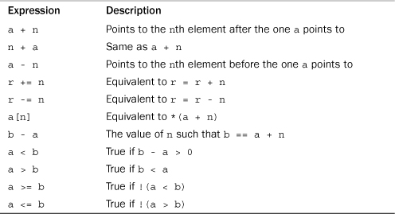
Expressions such as a + n are valid only if both a and a + n lie within the range of the container (including past-the-end).
You have probably noticed that the iterator kinds form a hierarchy. A forward iterator has all the capabilities of an input iterator and of an output iterator, plus its own capabilities. A bidirectional iterator has all the capabilities of a forward iterator, plus its own capabilities. And a random access iterator has all the capabilities of a forward iterator, plus its own capabilities. Table 16.4 summarizes the main iterator capabilities. In it, i is an iterator, and n is an integer.
Table 16.4. Iterator Capabilities
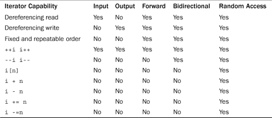
An algorithm written in terms of a particular kind of iterator can use that kind of iterator or any other iterator that has the required capabilities. So a container with, say, a random access iterator can use an algorithm written for an input iterator.
Why all these different kinds of iterators? The idea is to write an algorithm using the iterator with the fewest requirements possible, allowing it to be used with the largest range of containers. Thus, the find() function, by using a lowly input iterator, can be used with any container that contains readable values. The sort() function, however, by requiring a random access iterator, can be used just with containers that support that kind of iterator.
Note that the various iterator kinds are not defined types; rather, they are conceptual characterizations. As mentioned earlier, each container class defines a class scope typedef name called iterator. So the vector<int> class has iterators of type vector<int>::iterator. But the documentation for this class would tell you that vector iterators are random access iterators. That, in turn, allows you to use algorithms based on any iterator type because a random access iterator has all the iterator capabilities. Similarly, a list<int> class has iterators of type list<int>::iterator. The STL implements a doubly linked list, so it uses a bidirectional iterator. Thus, it can’t use algorithms based on random access iterators, but it can use algorithms based on less demanding iterators.
The STL has several features, such as kinds of iterators, that aren’t expressible in the C++ language. That is, although you can design, say, a class that has the properties of a forward iterator, you can’t have the compiler restrict an algorithm to using only that class. The reason is that the forward iterator is a set of requirements, not a type. The requirements could be satisfied by an iterator class you’ve designed, but they could also be satisfied by an ordinary pointer. An STL algorithm works with any iterator implementation that meets its requirements. STL literature uses the word concept to describe a set of requirements. Thus, there is an input iterator concept, a forward iterator concept, and so on. By the way, if you do need iterators for, say, a container class you’re designing, you can look to the STL, which include iterator templates for the standard varieties.
Concepts can have an inheritance-like relationship. For example, a bidirectional iterator inherits the capabilities of a forward iterator. However, you can’t apply the C++ inheritance mechanism to iterators. For example, you might implement a forward iterator as a class and a bidirectional iterator as a regular pointer. So in terms of the C++ language, this particular bidirectional iterator, being a built-in type, couldn’t be derived from a class. Conceptually, however, it does inherit. Some STL literature uses the term refinement to indicate this conceptual inheritance. Thus, a bidirectional iterator is a refinement of the forward iterator concept.
A particular implementation of a concept is termed a model. Thus, an ordinary pointer-to-int is a model of the concept random access iterator. It’s also a model of a forward iterator, for it satisfies all the requirements of that concept.
Iterators are generalizations of pointers, and a pointer satisfies all the iterator requirements. Iterators form the interface for STL algorithms, and pointers are iterators, so STL algorithms can use pointers to operate on non-STL containers that are based on pointers. For example, you can use STL algorithms with arrays. Suppose Receipts is an array of double values, and you would like to sort in ascending order:
const int SIZE = 100;
double Receipts[SIZE];
The STL sort() function, recall, takes as arguments an iterator pointing to the first element in a container and an iterator pointing to past-the-end. Well, &Receipts[0] (or just Receipts) is the address of the first element, and &Receipts[SIZE] (or just Receipts + SIZE) is the address of the element following the last element in the array. Thus, the following function call sorts the array:
sort(Receipts, Receipts + SIZE);
C++ guarantees that the expression Receipts + n is defined as long as the result lies in the array or one past-the-end. Thus, C++ supports the “one-past-the-end” concept for pointers into an array, and this makes it possible to apply STL algorithms to ordinary arrays. Thus, the fact that pointers are iterators and that algorithms are iterator based makes it possible to apply STL algorithms to ordinary arrays. Similarly, you can apply STL algorithms to data forms of your own design, provided that you supply suitable iterators (which may be pointers or objects) and past-the-end indicators.
copy(), ostream_iterator, and istream_iteratorThe STL provides some predefined iterators. To see why, let’s establish some background. There is an algorithm called copy() for copying data from one container to another. This algorithm is expressed in terms of iterators, so it can copy from one kind of container to another or even from or to an array, because you can use pointers into an array as iterators. For example, the following copies an array into a vector:
int casts[10] = {6, 7, 2, 9 ,4 , 11, 8, 7, 10, 5};
vector<int> dice[10];
copy(casts, casts + 10, dice.begin()); // copy array to vector
The first two iterator arguments to copy() represent a range to be copied, and the final iterator argument represents the location to which the first item is copied. The first two arguments must be input iterators (or better), and the final argument must be an output iterator (or better). The copy() function overwrites existing data in the destination container, and the container has to be large enough to hold the copied elements. So you can’t use copy() to place data in an empty vector—at least not without resorting to a trick that is revealed later in this chapter.
Now suppose you want to copy information to the display. You could use copy() if there was an iterator representing the output stream. The STL provides such an iterator with the ostream_iterator template. Using STL terminology, this template is a model of the output iterator concept. It is also an example of an adapter—a class or function that converts some other interface to an interface used by the STL. You can create an iterator of this kind by including the iterator (formerly iterator.h) header file and making a declaration:
#include <iterator>
...
ostream_iterator<int, char> out_iter(cout, " ");
The out_iter iterator now becomes an interface that allows you to use cout to display information. The first template argument (int, in this case) indicates the data type being sent to the output stream. The second template argument (char, in this case) indicates the character type used by the output stream. (Another possible value would be wchar_t.) The first constructor argument (cout, in this case) identifies the output stream being used. It could also be a stream used for file output. The final character string argument is a separator to be displayed after each item sent to the output stream.
You could use the iterator like this:
*out_iter++ = 15; // works like cout << 15 << " ";
For a regular pointer, this would mean assigning the value 15 to the pointed-to location and then incrementing the pointer. For this ostream_iterator, however, the statement means send 15 and then a string consisting of a space to the output stream managed by cout. Then it should get ready for the next output operation. You could use the iterator with copy() as follows:
copy(dice.begin(), dice.end(), out_iter); // copy vector to output stream
This would mean to copy the entire range of the dice container to the output stream—that is, to display the contents of the container.
Or you could skip creating a named iterator and construct an anonymous iterator instead. That is, you could use the adapter like this:
copy(dice.begin(), dice.end(), ostream_iterator<int, char>(cout, " ") );
Similarly, the iterator header file defines an istream_iterator template for adapting istream input to the iterator interface. It is a model of the input iterator concept. You could use two istream_iterator objects to define an input range for copy():
copy(istream_iterator<int, char>(cin),
istream_iterator<int, char>(), dice.begin());
Like ostream_iterator, istream_iterator uses two template arguments. The first indicates the data type to be read, and the second indicates the character type used by the input stream. Using a constructor argument of cin means to use the input stream managed by cin. Omitting the constructor argument indicates input failure, so the previous code means to read from the input stream until end-of-file, type mismatch, or some other input failure.
The iterator header file provides some other special-purpose predefined iterator types in addition to ostream_iterator and istream_iterator. They are reverse_iterator, back_insert_iterator, front_insert_iterator, and insert_iterator.
Let’s start with seeing what a reverse iterator does. In essence, incrementing a reverse iterator causes it to decrement. Why not just decrement a regular iterator? The main reason is to simplify using existing functions. Suppose you want to display the contents of the dice container. As you just saw, you can use copy() and ostream_iterator to copy the contents to the output stream:
ostream_iterator<int, char> out_iter(cout, " ");
copy(dice.begin(), dice.end(), out_iter); // display in forward order
Now suppose you want to print the contents in reverse order. (Perhaps you are performing time-reversal studies.) There are several approaches that don’t work, but rather than wallow in them, let’s go to one that does. The vector class has a member function called rbegin() that returns a reverse iterator pointing to past-the-end and a member rend() that returns a reverse iterator pointing to the first element. Because incrementing a reverse iterator makes it decrement, you can use the following statement to display the contents backward:
copy(dice.rbegin(), dice.rend(), out_iter); // display in reverse order
You don’t even have to declare a reverse iterator.
Both rbegin() and end() return the same value (past-the-end), but as a different type (reverse_iterator versus iterator). Similarly, both rend() and begin() return the same value (an iterator to the first element), but as a different type.
Reverse pointers have to make a special compensation. Suppose rp is a reverse pointer initialized to dice.rbegin(). What should *rp be? Because rbegin() returns past-the-end, you shouldn’t try to dereference that address. Similarly, if rend() is really the location of the first element, copy() stops one location earlier because the end of the range is not in a range. Reverse pointers solve both problems by decrementing first and then dereferencing. That is, *rp dereferences the iterator value immediately preceding the current value of *rp. If rp points to position six, *rp is the value of position five, and so on. Listing 16.10 illustrates using copy(), an ostream iterator, and a reverse iterator.
// copyit.cpp -- copy() and iterators
#include <iostream>
#include <iterator>
#include <vector>
int main()
{
using namespace std;
int casts[10] = {6, 7, 2, 9 ,4 , 11, 8, 7, 10, 5};
vector<int> dice(10);
// copy from array to vector
copy(casts, casts + 10, dice.begin());
cout << "Let the dice be cast!\n";
// create an ostream iterator
ostream_iterator<int, char> out_iter(cout, " ");
// copy from vector to output
copy(dice.begin(), dice.end(), out_iter);
cout << endl;
cout <<"Implicit use of reverse iterator.\n";
copy(dice.rbegin(), dice.rend(), out_iter);
cout << endl;
cout <<"Explicit use of reverse iterator.\n";
vector<int>::reverse_iterator ri;
for (ri = dice.rbegin(); ri != dice.rend(); ++ri)
cout << *ri << ' ';
cout << endl;
return 0;
}
Here is the output of the program in Listing 16.10:
Let the dice be cast!
6 7 2 9 4 11 8 7 10 5
Implicit use of reverse iterator.
5 10 7 8 11 4 9 2 7 6
Explicit use of reverse iterator.
5 10 7 8 11 4 9 2 7 6
If you have the choice of explicitly declaring iterators or using STL functions to handle the matter internally, for example, by passing an rbegin() return value to a function, you should take the latter course. It’s one less thing to do and one less opportunity to experience human fallibility.
The other three iterators (back_insert_iterator, front_insert_iterator, and insert_iterator) also increase the generality of the STL algorithms. Many STL functions are like copy() in that they send their results to a location indicated by an output iterator. Recall that the following copies values to the location beginning at dice.begin():
copy(casts, casts + 10, dice.begin());
These values overwrite the prior contents in dice, and the function assumes that dice has enough room to hold the values. That is, copy() does not automatically adjust the size of the destination to fit the information sent to it. Listing 16.10 takes care of that situation by declaring dice to have 10 elements, but suppose you don’t know in advance how big dice should be. Or suppose you want to add elements to dice rather than overwrite existing ones.
The three insert iterators solve these problems by converting the copying process to an insertion process. Insertion adds new elements without overwriting existing data, and it uses automatic memory allocation to ensure that the new information fits. A back_insert_iterator inserts items at the end of the container, and a front_insert_iterator inserts items at the front. Finally, the insert_iterator inserts items in front of the location specified as an argument to the insert_iterator constructor. All three of these iterators are models of the output container concept.
There are restrictions. A back_insert_iterator can be used only with container types that allow rapid insertion at the end. (Rapid refers to a constant time algorithm; the section “Container Concepts,” later in this chapter, discusses the constant time concept further.) The vector class qualifies. A front_insert_iterator can be used only with container types that allow constant time insertion at the beginning. Here the vector class doesn’t qualify, but the queue class does. The insert_iterator doesn’t have these restrictions. Thus, you can use it to insert material at the front of a vector. However, a front_insert_iterator does so faster for the container types that support it.
You can use an insert_iterator to convert an algorithm that copies data into one that inserts data.
These iterators take the container type as a template argument and the actual container identifier as a constructor argument. That is, to create a back_insert_iterator for a vector<int> container called dice, you use this:
back_insert_iterator<vector<int> > back_iter(dice);
The reason you have to declare the container type is that the iterator has to make use of the appropriate container method. The code for the back_insert_iterator constructor will assume that a push_back() method exists for the type passed to it. The copy() function, being a standalone function, doesn’t have the access rights to resize a container. But the declaration just shown allows back_iter to use the vector<int>::push_back() method, which does have access rights.
Declaring a front_insert_iterator has the same form. An insert_iterator declaration has an additional constructor argument to identify the insertion location:
insert_iterator<vector<int> > insert_iter(dice, dice.begin() );
Listing 16.11 illustrates using two of these iterators. Also it uses for_each() instead of an ostream iterator for output.
// inserts.cpp -- copy() and insert iterators
#include <iostream>
#include <string>
#include <iterator>
#include <vector>
#include <algorithm>
void output(const std::string & s) {std::cout << s << " ";}
int main()
{
using namespace std;
string s1[4] = {"fine", "fish", "fashion", "fate"};
string s2[2] = {"busy", "bats"};
string s3[2] = {"silly", "singers"};
vector<string> words(4);
copy(s1, s1 + 4, words.begin());
for_each(words.begin(), words.end(), output);
cout << endl;
// construct anonymous back_insert_iterator object
copy(s2, s2 + 2, back_insert_iterator<vector<string> >(words));
for_each(words.begin(), words.end(), output);
cout << endl;
// construct anonymous insert_iterator object
copy(s3, s3 + 2, insert_iterator<vector<string> >(words,
words.begin()));
for_each(words.begin(), words.end(), output);
cout << endl;
return 0;
}
Here is the output of the program in Listing 16.11:
fine fish fashion fate
fine fish fashion fate busy bats
silly singers fine fish fashion fate busy bats
The first copy()copies the four strings from s1 into words. This works in part because words is declared to hold four strings, which equals the number of strings being copied. Then the back_insert_iterator inserts the strings from s2 just in front of the end of the words array, expanding the size of words to six elements. Finally, the insert_iterator inserts the two strings from s3 just in front of the first element of words, expanding the size of words to eight elements. If the program attempted to copy s2 and s3 into words by using words.end() and words.begin() as iterators, there would be no room in words for the new data, and the program would probably abort because of memory violations.
If you’re feeling overwhelmed by all the iterator varieties, keep in mind that using them will make them familiar. Also keep in mind that these predefined iterators expand the generality of the STL algorithms. Thus, not only can copy() copy information from one container to another, it can copy information from a container to the output stream and from the input stream to a container. And you can also use copy() to insert material into another container. So you wind up with a single function doing the work of many. And because copy() is just one of several STL functions that use an output iterator, these predefined iterators multiply the capabilities of those functions, too.
The STL has both container concepts and container types. The concepts are general categories with names such as container, sequence container, and associative container. The container types are templates you can use to create specific container objects. The original 11 container types are deque, list, queue, priority_queue, stack, vector, map, multimap, set, multiset, and bitset. (This chapter doesn’t discuss bitset, which is a container for dealing with data at the bit level.) C++11 adds forward_list, unordered_map, unordered_multimap, unordered_set, and unordered_multiset, and it moves bitset from the container category into its own separate category. Because the concepts categorize the types, let’s start with them.
No type corresponds to the basic container concept, but the concept describes elements common to all the container classes. It’s sort of a conceptual abstract base class—conceptual because the container classes don’t actually use the inheritance mechanism. Or to put it another way, the container concept lays down a set of requirements that all STL container classes must satisfy.
A container is an object that stores other objects, which are all of a single type. The stored objects may be objects in the OOP sense, or they may be values of built-in types. Data stored in a container is owned by the container. That means when a container expires, so does the data stored in the container. (However, if the data are pointers, the pointed-to data does not necessarily expire.)
You can’t store just any kind of object in a container. In particular, the type has to be copy constructable and assignable. Basic types satisfy these requirements, as do class types—unless the class definition makes one or both of the copy constructor and the assignment operator private or protected. (C++11 refines the concepts, adding terms such as CopyInsertable and MoveInsertable, but we’ll take a more simplified, if less precise, overview.)
The basic container doesn’t guarantee that its elements are stored in any particular order or that the order doesn’t change, but refinements to the concept may add such guarantees. All containers provide certain features and operations. Table 16.5 summarizes several of these common features. In the table, X represents a container type (such as vector), T represents the type of object stored in the container, a and b represent values of type X, r is a value of type X&, and u represents an identifier of type X (that is, if X represents vector<int>, then u is a vector<int> object).
Table 16.5. Some Basic Container Properties
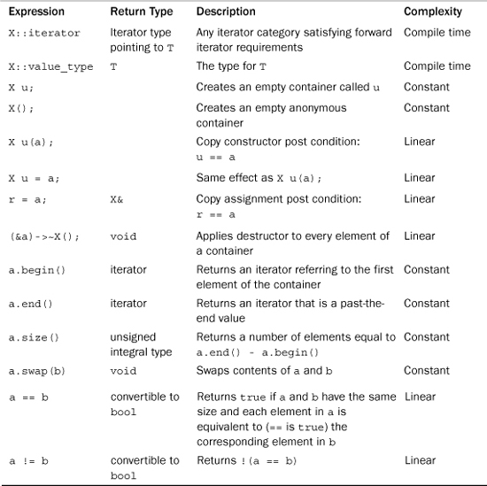
The Complexity column in Table 16.5 describes the time needed to perform an operation. This table lists three possibilities, which, from fastest to slowest, are as follows:
• Compile time
• Constant time
• Linear time
If the complexity is compile time, the action is performed during compilation and uses no execution time. A constant complexity means the operation takes place during runtime but doesn’t depend on the number of elements in an object. A linear complexity means the time is proportional to the number of elements. Thus, if a and b are containers, a == b has linear complexity because the == operation may have to be applied to each element of the container. Actually, that is a worst-case scenario. If two containers have different sizes, no individual comparisons need to be made.
Complexity requirements are characteristic of the STL. Although the details of an implementation may be hidden, the performance specifications should be public so that you know the computing cost of doing a particular operation.
Table 16.6 shows some additions C++11 has made to the general container requirements. The table uses the notation rv to denote a non-constant rvalue of type X (for example, the return value of a function). Also the requirement in Table 16.6 that X::iterator satisfy the requirements for a forward iterator is a change from the former requirement that it just not be an output iterator.
Table 16.6. Some Added Basic Container Requirements (C++11)
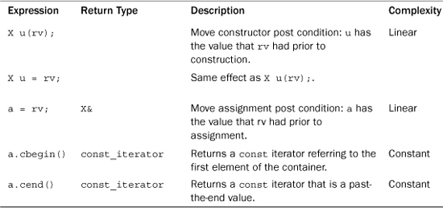
The difference between copy construction and copy assignment on the one hand and move construction and move assignment on the other hand is that a copy operation leaves the original unchanged, whereas a move operation can alter the original, perhaps transferring ownership without doing any copying When the source object is temporary, move operations can provide more efficient code than does regular copying. Chapter 18 discusses move semantics further.
You can refine the basic container concept by adding requirements. The sequence is an important refinement because several of the STL container types—deque, forward_list (C++11), list, queue, priority_queue, stack, and vector—are sequences. (Recall that a queue allows elements to be added at the rear end and removed from the front. A double-ended queue, represented by deque, allows addition and removal at both ends.) The requirement that the iterator be at least a forward iterator guarantees that the elements are arranged in a definite order that doesn’t change from one cycle of iteration to the next. The array class also is classified as a sequence container, although it doesn’t satisfy all the requirements.
The sequence also requires that its elements be arranged in strict linear order. That is, there is a first element, there is a last element, and each element but the first and last has exactly one element immediately ahead of it and one element immediately after it. An array and a linked list are examples of sequences, whereas a branching structure (in which each node points to two daughter nodes) is not.
Because elements in sequence have a definite order, operations such as inserting values at a particular location and erasing a particular range become possible. Table 16.7 lists these and other operations required of a sequence. The table uses the same notation as Table 16.5, with the addition of t representing a value of type T—that is, the type of value stored in the container, of n, an integer, and of p, q, i, and j, representing iterators.
Table 16.7. Sequence Requirements
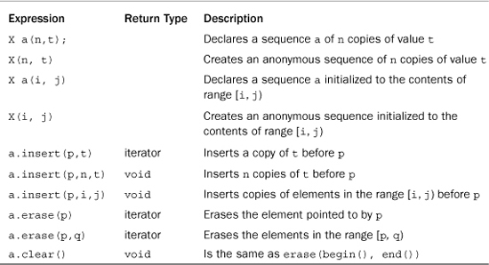
Because the deque, list, queue, priority_queue, stack, and vector template classes are all models of the sequence concept, they all support the operators in Table 16.7. In addition, there are operations that are available to some of these six models. When allowed, they have constant-time complexity. Table 16.8 lists these additional operations.
Table 16.8. Optional Sequence Requirements
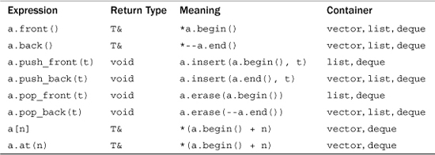
Table 16.8 merits a comment or two. First, notice that a[n] and a.at(n) both return a reference to the nth element (numbering from 0) in a container. The difference between the two is that a.at(n) does bounds checking and throws an out_of_range exception if n is outside the valid range for the container. Next, you might wonder why, say, push_front() is defined for list and deque and not for vector. Suppose you want to insert a new value at the front of a vector of 100 elements. To make room, you have to move element 99 to position 100, and then you have to move element 98 to position 99, and so on. This is an operation with linear-time complexity because moving 100 elements would take 100 times as long as moving a single element. But the operations in Table 16.8 are supposed to be implemented only if they can be performed with constant-time complexity. The design for lists and double-ended queues, however, allows an element to be added to the front without moving the other elements to new locations, so they can implement push_front() with constant-time complexity. Figure 16.4 illustrates push_front() and push_back().
Figure 16.4. push_front() and push_back().
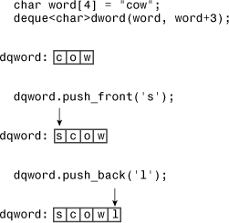
Let’s take a closer look at the six sequence container types.
vectorYou’ve already seen several examples using the vector template, which is declared in the vector header file. In brief, vector is a class representation of an array. The class provides automatic memory management that allows the size of a vector object to vary dynamically, growing and shrinking as elements are added or removed. It provides random access to elements. Elements can be added to or removed from the end in constant time, but insertion and removal from the beginning and the middle are linear-time operations.
In addition to being a sequence, a vector container is also a model of the reversible container concept. This adds two more class methods: rbegin() returns an iterator to the first element of the reversed sequence, and rend() returns a past-the-end iterator for the reversed sequence. So if dice is a vector<int> container and Show(int) is a function that displays an integer, the following code displays the contents of dice first in forward order and then in reverse order:
for_each(dice.begin(), dice.end(), Show); // display in order
cout << endl;
for_each(dice.rbegin(), dice.rend(), Show); // display in reversed order
cout << endl;
The iterator returned by the two methods is of a class scope type reverse_iterator. Recall that incrementing such an iterator causes it to move through a reversible container in reverse order.
The vector template class is the simplest of the sequence types and is considered the type that should be used by default unless the program requirements are better satisfied by the particular virtues of the other types.
dequeThe deque template class (declared in the deque header file) represents a double-ended queue, a type often called a deque (pronounced “deck”), for short. As implemented in the STL, it’s a lot like a vector container, supporting random access. The main difference is that inserting and removing items from the beginning of a deque object are constant-time operations instead of being linear-time operations the way they are for vector. So if most operations take place at the beginning and ends of a sequence, you should consider using a deque data structure.
The goal of constant-time insertion and removal at both ends of a deque makes the design of a deque object more complex than that of a vector object. Thus, although both offer random access to elements and linear-time insertion and removal from the middle of a sequence, the vector container should allow faster execution of these operations.
listThe list template class (declared in the list header file) represents a doubly linked list. Each element, other than the first and last, is linked to the item before it and the item following it, implying that a list can be traversed in both directions. The crucial difference between list and vector is that list provides for constant-time insertion and removal of elements at any location in the list. (Recall that the vector template provides linear-time insertion and removal except at the end, where it provides constant-time insertion and removal.) Thus, vector emphasizes rapid access via random access, whereas list emphasizes rapid insertion and removal of elements.
Like vector, list is a reversible container. Unlike vector, list does not support array notation and random access. Unlike a vector iterator, a list iterator remains pointing to the same element even after items are inserted into or removed from a container. For example, suppose you have an iterator pointing to the fifth element of a vector container. Then suppose you insert an element at the beginning of the container. All the other elements have to be moved to make room, so after the insertion, the fifth element now contains the value that used to be in the fourth element. Thus, the iterator points to the same location but to different data. Inserting a new element into a list, however, doesn’t move the existing elements; it just alters the link information. An iterator pointing to a certain item still points to the same item, but it may be linked to different items than before.
The list template class has some list-oriented member functions in addition to those that come with sequences and reversible containers. Table 16.9 lists many of them. (For a complete list of STL methods and functions, see Appendix G.) The Alloc template parameter is one you normally don’t have to worry about because it has a default value.
Table 16.9. Some list Member Functions
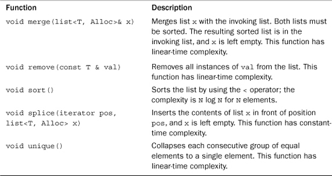
Listing 16.12 illustrates these methods, along with the insert() method, which comes with all STL classes that model sequences.
// list.cpp -- using a list
#include <iostream>
#include <list>
#include <iterator>
#include <algorithm>
void outint(int n) {std::cout << n << " ";}
int main()
{
using namespace std;
list<int> one(5, 2); // list of 5 2s
int stuff[5] = {1,2,4,8, 6};
list<int> two;
two.insert(two.begin(),stuff, stuff + 5 );
int more[6] = {6, 4, 2, 4, 6, 5};
list<int> three(two);
three.insert(three.end(), more, more + 6);
cout << "List one: ";
for_each(one.begin(),one.end(), outint);
cout << endl << "List two: ";
for_each(two.begin(), two.end(), outint);
cout << endl << "List three: ";
for_each(three.begin(), three.end(), outint);
three.remove(2);
cout << endl << "List three minus 2s: ";
for_each(three.begin(), three.end(), outint);
three.splice(three.begin(), one);
cout << endl << "List three after splice: ";
for_each(three.begin(), three.end(), outint);
cout << endl << "List one: ";
for_each(one.begin(), one.end(), outint);
three.unique();
cout << endl << "List three after unique: ";
for_each(three.begin(), three.end(), outint);
three.sort();
three.unique();
cout << endl << "List three after sort & unique: ";
for_each(three.begin(), three.end(), outint);
two.sort();
three.merge(two);
cout << endl << "Sorted two merged into three: ";
for_each(three.begin(), three.end(), outint);
cout << endl;
return 0;
}
Here is the output of the program in Listing 16.12:
List one: 2 2 2 2 2
List two: 1 2 4 8 6
List three: 1 2 4 8 6 6 4 2 4 6 5
List three minus 2s: 1 4 8 6 6 4 4 6 5
List three after splice: 2 2 2 2 2 1 4 8 6 6 4 4 6 5
List one:
List three after unique: 2 1 4 8 6 4 6 5
List three after sort & unique: 1 2 4 5 6 8
Sorted two merged into three: 1 1 2 2 4 4 5 6 6 8 8
The program in Listing 16.12 uses the for_each() algorithm and an outint() function to display the lists. With C++11, you could use the range-based for loop instead:
for (auto x : three) cout << x << " ";
The main difference between insert() and splice() is that insert() inserts a copy of the original range into the destination, whereas splice() moves the original range into the destination. Thus, after the contents of one are spliced to three, one is left empty. (The splice() method has additional prototypes for moving single elements and a range of elements.) The splice() method leaves iterators valid. That is, if you set a particular iterator to point to an element in one, that iterator still points to the same element after splice() relocates it in three.
Notice that unique() only reduces adjacent equal values to a single value. After the program executes three.unique(), three still contains two fours and two sixes that weren’t adjacent. But applying sort() and then unique() does limit each value to a single appearance.
There is a nonmember sort() function (Listing 16.9), but it requires random access iterators. Because the trade-off for rapid insertion is to give up random access, you can’t use the nonmember sort() function with a list. Therefore, the class includes a member version that works within the restrictions of the class.
list ToolboxThe list methods form a handy toolbox. Suppose, for example, that you have two mailing lists to organize. You could sort each list, merge them, and then use unique() to remove multiple entries.
The sort(), merge(), and unique() methods also each have a version that accepts an additional argument to specify an alternative function to be used for comparing elements. Similarly, the remove() method has a version with an additional argument that specifies a function used to determine whether an element is removed. These arguments are examples of predicate functions, a topic to which we’ll return later.
forward_list (C++11)C++11 adds forward_list as a container class. This class implements a singly linked list. In this kind of list, each item is linked just to the next item, but not to the preceding item. Therefore, the class requires just a forward iterator, not a bidirectional one. Thus, unlike vector and list, forward_list isn’t a reversible container. Compared to list, forward_list is simpler, more compact, but with fewer features.
queueThe queue template class (declared in the queue—formerly queue.h—header file) is an adapter class. Recall that the ostream_iterator template is an adapter that allows an output stream to use the iterator interface. Similarly, the queue template allows an underlying class (deque, by default) to exhibit the typical queue interface.
The queue template is more restrictive than deque. Not only does it not permit random access to elements of a queue, the queue class doesn’t even allow you to iterate through a queue. Instead, it limits you to the basic operations that define a queue. You can add an element to the rear of a queue, remove an element from the front of a queue, view the values of the front and rear elements, check the number of elements, and test to see if a queue is empty. Table 16.10 lists these operations.
Note that pop() is a data removal method, not a data retrieval method. If you want to use a value from a queue, you first use front() to retrieve the value and then use pop() to remove it from the queue.
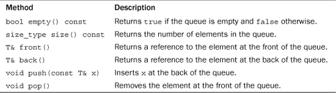
priority_queueThe priority_queue template class (declared in the queue header file) is another adapter class. It supports the same operations as queue. The main difference between the two is that with priority_queue, the largest item gets moved to the front of the queue. (Life is not always fair, and neither are queues.) An internal difference is that the default underlying class is vector. You can alter the comparison used to determine what gets to the head of the queue by providing an optional constructor argument:
priority_queue<int> pq1; // default version
priority_queue<int> pq2(greater<int>); // use greater<int> to order
The greater<>() function is a predefined function object, and it is discussed later in this chapter.
stackLike queue, stack (declared in the stack—formerly stack.h—header file) is an adapter class. It gives an underlying class (vector, by default) the typical stack interface.
The stack template is more restrictive than vector. Not only does it not permit random access to elements of a stack, the stack class doesn’t even allow you to iterate through a stack. Instead, it limits you to the basic operations that define a stack. You can push a value onto the top of a stack, pop an element from the top of a stack, view the value at the top of a stack, check the number of elements, and test whether the stack is empty. Table 16.11 lists these operations.
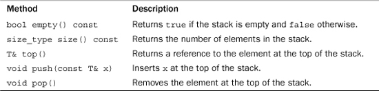
Much as with queue, if you want to use a value from a stack, you first use top() to retrieve the value, and then you use pop() to remove it from the stack.
array (C++11)The array template class, introduced in Chapter 4 and defined in the array header file, is not an STL container because it has a fixed size. Thus, operations that would resize a container, such as push_back() and insert(), are not defined for array. But those member functions that do make sense, such as operator[]() and at(), are provided. And you can use many standard STL algorithms, such as copy() and for_each(), with array objects.
An associative container is another refinement of the container concept. An associative container associates a value with a key and uses the key to find the value. For example, the values could be structures representing employee information, such as name, address, office number, home and work phones, health plan, and so on, and the key could be a unique employee number. To fetch the employee information, a program would use the key to locate the employee structure. Recall that for a container X, in general, the expression X::value_type indicates the type of value stored in the container. For an associative container, the expression X::key_type indicates the type used for the key.
The strength of an associative container is that it provides rapid access to its elements. Like a sequence, an associative container allows you to insert new elements; however, you can’t specify a particular location for the inserted elements. The reason is that an associative container usually has a particular algorithm for determining where to place data so that it can retrieve information quickly.
Associative containers typically are implemented using some form of tree. A tree is a data structure in which a root node is linked to one or two other nodes, each of which is linked to one or two nodes, thus forming a branching structure. The node aspect makes it relatively simple to add or remove a new data item, much as with a linked list. But compared to a list, a tree offers much faster search times.
The STL provides four associative containers: set, multiset, map, and multimap. The first two types are defined in the set header file (formerly separately in set.h and multiset.h), and the second two types are defined in the map header file (formerly separately in map.h and multimap.h).
The simplest of the bunch is set; the value type is the same as the key type, and the keys are unique, meaning there is no more than one instance of a key in a set. Indeed, for set, the value is the key. The multiset type is like the set type except that it can have more than one value with the same key. For example, if the key and value type are int, a multiset object could hold, say 1, 2, 2, 2, 3, 5, 7, and 7.
For the map type, the value type is different from the key type, and the keys are unique, with only one value per key. The multimap type is similar to map, except one key can be associated with multiple values.
There’s too much information about these types to cover in this chapter (but Appendix G does list the methods), so let’s just look at a simple example that uses set and a simple example that uses multimap.
set ExampleThe STL set models several concepts. It is an associative set, it is reversible, it is sorted, and the keys are unique, so it can hold no more than one of any given value. Like vector and list, set uses a template parameter to provide the type stored:
set<string> A; // a set of string objects
An optional second template argument can be used to indicate a comparison function or object to be used to order the key. By default, the less<> template (discussed later) is used. Older C++ implementations may not provide a default value and thus require an explicit template parameter:
set<string, less<string> > A; // older implementation
const int N = 6;
string s1[N] = {"buffoon", "thinkers", "for", "heavy", "can", "for"};
set<string> A(s1, s1 + N); // initialize set A using a range from array
ostream_iterator<string, char> out(cout, " ");
copy(A.begin(), A.end(), out);
Like other containers, set has a constructor (refer to Table 16.6) that takes a range of iterators as arguments. This provides a simple way to initialize a set to the contents of an array. Remember that the last element of a range is one past-the-end, and s1 + N points to one position past-the-end of array s1. The output for this code fragment illustrates that keys are unique (the string "for" appears twice in the array but once in the set) and that the set is sorted:
buffoon can for heavy thinkers
Mathematics defines some standard operations for sets. For example, the union of two sets is a set that combines the contents of the two sets. If a particular value is common to both sets, it appears just once in the union because of the unique key feature. The intersection of two sets is a set that consists of the elements that are common to both sets. The difference between two sets is the first set minus the elements common to both sets.
The STL provides algorithms that support these operations. They are general functions rather than methods, so they aren’t restricted to set objects. However, all set objects automatically satisfy the precondition for using these algorithms—namely, that the container be sorted. The set_union() function takes five iterators as arguments. The first two define a range in one set, the second two define a range in a second set, and the final iterator is an output iterator that identifies a location to which to copy the resultant set. For example, to display the union of sets A and B, you can use this:
set_union(A.begin(), A.end(), B.begin(), B.end(),
ostream_iterator<string, char> out(cout, " "));
Suppose you want to place the result into a set C instead of displaying it. In this case, you would want the last argument to be an iterator into C. The obvious choice is C.begin(), but that doesn’t work for two reasons. The first reason is that associative sets treat keys as constant values, so the iterator returned by C.begin() is a constant iterator and can’t be used as an output iterator. The second reason not to use C.begin() directly is that set_union(), like copy(), overwrites existing data in a container and requires the container to have sufficient space to hold the new information. C, being empty, does not satisfy that requirement. But the insert_iterator template discussed earlier solves both problems. Earlier you saw that it converts copying to insertion. Also it models the output iterator concept, so you can use it to write to a container. So you can construct an anonymous insert_iterator to copy information to C. The constructor, recall, takes the name of the container and an iterator as arguments:
set_union(A.begin(), A.end(), B.begin(), B.end(),
insert_iterator<set<string> >(C, C.begin()));
The set_intersection() and set_difference() functions find the set intersection and set difference of two sets, and they have the same interface as set_union().
Two useful set methods are lower_bound() and upper_bound(). The lower_bound() method takes a key-type value as its argument and returns an iterator that points to the first member of the set that is not less than the key argument. Similarly, the upper_bound() method takes a key as its argument and returns an iterator that points to the first member of the set that is greater than the key argument. For example, if you had a set of strings, you could use these methods to identify a range encompassing all strings from "b" up to "f" in the set.
Because sorting determines where additions to a set go, the class has insertion methods that just specify the material to be inserted, without specifying a position. If A and B are sets of strings, for example, you can use this:
string s("tennis");
A.insert(s); // insert a value
B.insert(A.begin(), A.end()); // insert a range
Listing 16.13 illustrates these uses of sets.
// setops.cpp -- some set operations
#include <iostream>
#include <string>
#include <set>
#include <algorithm>
#include <iterator>
int main()
{
using namespace std;
const int N = 6;
string s1[N] = {"buffoon", "thinkers", "for", "heavy", "can", "for"};
string s2[N] = {"metal", "any", "food", "elegant", "deliver","for"};
set<string> A(s1, s1 + N);
set<string> B(s2, s2 + N);
ostream_iterator<string, char> out(cout, " ");
cout << "Set A: ";
copy(A.begin(), A.end(), out);
cout << endl;
cout << "Set B: ";
copy(B.begin(), B.end(), out);
cout << endl;
cout << "Union of A and B:\n";
set_union(A.begin(), A.end(), B.begin(), B.end(), out);
cout << endl;
cout << "Intersection of A and B:\n";
set_intersection(A.begin(), A.end(), B.begin(), B.end(), out);
cout << endl;
cout << "Difference of A and B:\n";
set_difference(A.begin(), A.end(), B.begin(), B.end(), out);
cout << endl;
set<string> C;
cout << "Set C:\n";
set_union(A.begin(), A.end(), B.begin(), B.end(),
insert_iterator<set<string> >(C, C.begin()));
copy(C.begin(), C.end(), out);
cout << endl;
string s3("grungy");
C.insert(s3);
cout << "Set C after insertion:\n";
copy(C.begin(), C.end(),out);
cout << endl;
cout << "Showing a range:\n";
copy(C.lower_bound("ghost"),C.upper_bound("spook"), out);
cout << endl;
return 0;
}
Here is the output of the program in Listing 16.13:
Set A: buffoon can for heavy thinkers
Set B: any deliver elegant food for metal
Union of A and B:
any buffoon can deliver elegant food for heavy metal thinkers
Intersection of A and B:
for
Difference of A and B:
buffoon can heavy thinkers
Set C:
any buffoon can deliver elegant food for heavy metal thinkers
Set C after insertion:
any buffoon can deliver elegant food for grungy heavy metal thinkers
Showing a range:
grungy heavy metal
Like most of the examples in this chapter, the code in Listing 16.13 takes the lazy route for handling the std namespace:
using namespace std;
It does so in order to simplify the presentation. The examples use so many elements of the std namespace that using directives or the scope-resolution operators would tend to make the code look a bit fussy:
std::set<std::string> B(s2, s2 + N);
std::ostream_iterator<std::string, char> out(std::cout, " ");
std::cout << "Set A: ";
std::copy(A.begin(), A.end(), out);
multimap ExampleLike set, multimap is a reversible, sorted, associative container. However, with multimap, the key type is different from the value type, and a multimap object can have more than one value associated with a particular key.
The basic multimap declaration specifies the key type and the type of value, stored as template arguments. For example, the following declaration creates a multimap object that uses int as the key type and string as the type of value stored:
multimap<int,string> codes;
An optional third template argument can be used to indicate a comparison function or an object to be used to order the key. By default, the less<> template (discussed later) is used with the key type as its parameter. Older C++ implementations may require this template parameter explicitly.
To keep information together, the actual value type combines the key type and the data type into a single pair. To do this, the STL uses a pair<class T, class U> template class for storing two kinds of values in a single object. If keytype is the key type and datatype is the type of the stored data, the value type is pair<const keytype, datatype>. For example, the value type for the codes object declared earlier is pair<const int, string>.
Suppose that you want to store city names, using the area code as a key. This happens to fit the codes declaration, which uses an int for a key and a string as a data type. One approach is to create a pair and then insert it into the multimap object:
pair<const int, string> item(213, "Los Angeles");
codes.insert(item);
Or you can create an anonymous pair object and insert it in a single statement:
codes.insert(pair<const int, string> (213, "Los Angeles"));
Because items are sorted by key, there’s no need to identify an insertion location.
Given a pair object, you can access the two components by using the first and second members:
pair<const int, string> item(213, "Los Angeles");
cout << item.first << ' ' << item.second << endl;
What about getting information about a multimap object? The count() member function takes a key as its argument and returns the number of items that have that key. The lower_bound() and upper_bound() member functions take a key and work as they do for set. Also the equal_range() member function takes a key as its argument and returns iterators representing the range matching that key. In order to return two values, the method packages them into a pair object, this time with both template arguments being the iterator type. For example, the following would print a list of cities in the codes object with area code 718:
pair<multimap<KeyType, string>::iterator,
multimap<KeyType, string>::iterator> range
= codes.equal_range(718);
cout << "Cities with area code 718:\n";
std::multimap<KeyType, std::string>::iterator it;
for (it = range.first; it != range.second; ++it)
cout << (*it).second << endl;
Declarations like those just listed helped motivate the C++11 automatic type deduction feature, which allows you to simplify the code as follows:
auto range = codes.equal_range(718);
cout << "Cities with area code 718:\n";
for (auto it = range.first; it != range.second; ++it)
cout << (*it).second << endl;
Listing 16.14 demonstrates most of these techniques. It also uses typedef to simplify some of the code writing.
// multmap.cpp -- use a multimap
#include <iostream>
#include <string>
#include <map>
#include <algorithm>
typedef int KeyType;
typedef std::pair<const KeyType, std::string> Pair;
typedef std::multimap<KeyType, std::string> MapCode;
int main()
{
using namespace std;
MapCode codes;
codes.insert(Pair(415, "San Francisco"));
codes.insert(Pair(510, "Oakland"));
codes.insert(Pair(718, "Brooklyn"));
codes.insert(Pair(718, "Staten Island"));
codes.insert(Pair(415, "San Rafael"));
codes.insert(Pair(510, "Berkeley"));
cout << "Number of cities with area code 415: "
<< codes.count(415) << endl;
cout << "Number of cities with area code 718: "
<< codes.count(718) << endl;
cout << "Number of cities with area code 510: "
<< codes.count(510) << endl;
cout << "Area Code City\n";
MapCode::iterator it;
for (it = codes.begin(); it != codes.end(); ++it)
cout << " " << (*it).first << " "
<< (*it).second << endl;
pair<MapCode::iterator, MapCode::iterator> range
= codes.equal_range(718);
cout << "Cities with area code 718:\n";
for (it = range.first; it != range.second; ++it)
cout << (*it).second << endl;
return 0;
}
Here is the output of the program in Listing 16.14:
Number of cities with area code 415: 2
Number of cities with area code 718: 2
Number of cities with area code 510: 2
Area Code City
415 San Francisco
415 San Rafael
510 Oakland
510 Berkeley
718 Brooklyn
718 Staten Island
Cities with area code 718:
Brooklyn
Staten Island
An unordered associative container is yet another refinement of the container concept. Like an associative container, an unordered associative container associates a value with a key and uses the key to find the value. The underlying difference is that associative containers are based on tree structures, whereas unordered associative containers are based on another form of data structure called a hash table. The intent is to provide containers for which adding and deleting elements is relatively quick and for which there are efficient search algorithms. The four unordered associative containers are called unordered_set, unordered_multiset, unordered_map, and unordered_multimap. Appendix G looks a bit further at these additions.
Many STL algorithms use function objects, also known as functors. A functor is any object that can be used with () in the manner of a function. This includes normal function names, pointers to functions, and class objects for which the () operator is overloaded—that is, classes for which the peculiar-looking function operator()() is defined. For example, you could define a class like this:
class Linear
{
private:
double slope;
double y0;
public:
Linear(double sl_ = 1, double y_ = 0)
: slope(sl_), y0(y_) {}
double operator()(double x) {return y0 + slope * x; }
};
The overloaded () operator then allows you to use Linear objects like functions:
Linear f1;
Linear f2(2.5, 10.0);
double y1 = f1(12.5); // right-hand side is f1.operator()(12.5)
double y2 = f2(0.4);
Here y1 is calculated using the expression 0 + 1 * 12.5, and y2 is calculated using the expression 10.0 + 2.5 * 0.4. In the expression y0 + slope * x, the values for y0 and slope come from the constructor for the object, and the value of x comes from the argument to operator()().
Remember the for_each function? It applied a specified function to each member of a range:
for_each(books.begin(), books.end(), ShowReview);
In general, the third argument could be a functor, not just a regular function. Actually, this raises a question: How do you declare the third argument? You can’t declare it as a function pointer because a function pointer specifies the argument type. Because a container can contain just about any type, you don’t know in advance what particular argument type should be used. The STL solves that problem by using templates. The for_each prototype looks like this:
template<class InputIterator, class Function>
Function for_each(InputIterator first, InputIterator last, Function f);
The ShowReview() prototype is this:
void ShowReview(const Review &);
This makes the identifier ShowReview have the type void (*)(const Review &), so that is the type assigned to the template argument Function. With a different function call, the Function argument could represent a class type that has an overloaded () operator. Ultimately, the for_each() code will have an expression using f(). In the ShowReview() example, f is a pointer to a function, and f() invokes the function. If the final for_each() argument is an object, then f() becomes the object that invokes its overloaded () operator.
Just as the STL defines concepts for containers and iterators, it defines functor concepts:
• A generator is a functor that can be called with no arguments.
• A unary function is a functor that can be called with one argument.
• A binary function is a functor that can be called with two arguments.
For example, the functor supplied to for_each() should be a unary function because it is applied to one container element at a time.
Of course, these concepts come with refinements:
• A unary function that returns a bool value is a predicate.
• A binary function that returns a bool value is a binary predicate.
Several STL functions require predicate or binary predicate arguments. For example, Listing 16.9 uses a version of sort() that takes a binary predicate as its third argument:
bool WorseThan(const Review & r1, const Review & r2);
...
sort(books.begin(), books.end(), WorseThan);
The list template has a remove_if() member that takes a predicate as an argument. It applies the predicate to each member in the indicated range, removing those elements for which the predicate returns true. For example, the following code would remove all elements greater than 100 from the list three:
bool tooBig(int n){ return n > 100; }
list<int> scores;
...
scores.remove_if(tooBig);
Incidentally, this last example shows where a class functor might be useful. Suppose you want to remove every value greater than 200 from a second list. It would be nice if you could pass the cut-off value to tooBig() as a second argument so you could use the function with different values, but a predicate can have but one argument. If, however, you design a TooBig class, you can use class members instead of function arguments to convey additional information:
template<class T>
class TooBig
{
private:
T cutoff;
public:
TooBig(const T & t) : cutoff(t) {}
bool operator()(const T & v) { return v > cutoff; }
};
Here one value (v) is passed as a function argument, and the second argument (cutoff) is set by the class constructor. Given this definition, you can initialize different TooBig objects to different cut-off values to be used in calls to remove_if(). Listing 16.15 illustrates the technique.
// functor.cpp -- using a functor
#include <iostream>
#include <list>
#include <iterator>
#include <algorithm>
template<class T> // functor class defines operator()()
class TooBig
{
private:
T cutoff;
public:
TooBig(const T & t) : cutoff(t) {}
bool operator()(const T & v) { return v > cutoff; }
};
void outint(int n) {std::cout << n << " ";}
int main()
{
using std::list;
using std::cout;
using std::endl;
TooBig<int> f100(100); // limit = 100
int vals[10] = {50, 100, 90, 180, 60, 210, 415, 88, 188, 201};
list<int> yadayada(vals, vals + 10); // range constructor
list<int> etcetera(vals, vals + 10);
// C++11 can use the following instead
// list<int> yadayada = {50, 100, 90, 180, 60, 210, 415, 88, 188, 201};
// list<int> etcetera {50, 100, 90, 180, 60, 210, 415, 88, 188, 201};
cout << "Original lists:\n";
for_each(yadayada.begin(), yadayada.end(), outint);
cout << endl;
for_each(etcetera.begin(), etcetera.end(), outint);
cout << endl;
yadayada.remove_if(f100); // use a named function object
etcetera.remove_if(TooBig<int>(200)); // construct a function object
cout <<"Trimmed lists:\n";
for_each(yadayada.begin(), yadayada.end(), outint);
cout << endl;
for_each(etcetera.begin(), etcetera.end(), outint);
cout << endl;
return 0;
}
One functor (f100) is a declared object, and the second (TooBig<int>(200)) is an anonymous object created by a constructor call. Here’s the output of the program in Listing 16.15:
Original lists:
50 100 90 180 60 210 415 88 188 201
50 100 90 180 60 210 415 88 188 201
Trimmed lists:
50 100 90 60 88
50 100 90 180 60 88 188
Suppose that you already have a template function with two arguments:
template <class T>
bool tooBig(const T & val, const T & lim)
{
return val > lim;
}
You can use a class to convert it to a one-argument function object:
template<class T>
class TooBig2
{
private:
T cutoff;
public:
TooBig2(const T & t) : cutoff(t) {}
bool operator()(const T & v) { return tooBig<T>(v, cutoff); }
};
That is, you can use the following:
TooBig2<int> tB100(100);
int x;
cin >> x;
if (tB100(x)) // same as if (tooBig(x,100))
...
So the call tB100(x) is the same as tooBig(x,100), but the two-argument function is converted to a one-argument function object, with the second argument being used to construct the function object. In short, the class functor TooBig2 is a function adapter that adapts a function to meet a different interface.
As noted in the listing, C++11’s initializer-list feature simplifies initialization. You can replace
int vals[10] = {50, 100, 90, 180, 60, 210, 415, 88, 188, 201};
list<int> yadayada(vals, vals + 10); // range constructor
list<int> etcetera(vals, vals + 10);
with this:
list<int> yadayada = {50, 100, 90, 180, 60, 210, 415, 88, 188, 201};
list<int> etcetera {50, 100, 90, 180, 60, 210, 415, 88, 188, 201};
The STL defines several elementary functors. They perform actions such as adding two values and comparing two values for equality. They are provided to help support STL functions that take functions as arguments. For example, consider the transform() function. It has two versions. The first version takes four arguments. The first two arguments are iterators that specify a range in a container. (By now you must be familiar with that approach.) The third is an iterator that specifies where to copy the result. The final is a functor that is applied to each element in the range to produce each new element in the result. For example, consider the following:
const int LIM = 5;
double arr1[LIM] = {36, 39, 42, 45, 48};
vector<double> gr8(arr1, arr1 + LIM);
ostream_iterator<double, char> out(cout, " ");
transform(gr8.begin(), gr8.end(), out, sqrt);
This code calculates the square root of each element and sends the resulting values to the output stream. The destination iterator can be in the original range. For example, replacing out in this example with gr8.begin() would copy the new values over the old values. Clearly, the functor used must be one that works with a single argument.
The second version uses a function that takes two arguments, applying the function to one element from each of two ranges. It takes an additional argument, which comes third in order, identifying the start of the second range. For example, if m8 were a second vector<double> object and if mean(double, double) returned the mean of two values, the following would output the average of each pair of values from gr8 and m8:
transform(gr8.begin(), gr8.end(), m8.begin(), out, mean);
Now suppose you want to add the two arrays. You can’t use + as an argument because, for type double, + is a built-in operator, not a function. You could define a function to add two numbers and use it:
double add(double x, double y) { return x + y; }
...
transform(gr8.begin(), gr8.end(), m8.begin(), out, add);
But then you’d have to define a separate function for each type. It would be better to define a template, except that you don’t have to because the STL already has. The functional (formerly function.h) header defines several template class function objects, including one called plus<>().
Using the plus<> class for ordinary addition is possible, if awkward:
#include <functional>
...
plus<double> add; // create a plus<double> object
double y = add(2.2, 3.4); // using plus<double>::operator()()
But it makes it easy to provide a function object as an argument:
transform(gr8.begin(), gr8.end(), m8.begin(), out, plus<double>() );
Here, rather than create a named object, the code uses the plus<double> constructor to construct a functor to do the adding. (The parentheses indicate calling the default constructor; what’s passed to transform() is the constructed function object.)
The STL provides functor equivalents for all the built-in arithmetic, relational, and logical operators. Table 16.12 shows the names for these functor equivalents. They can be used with the C++ built-in types or with any user-defined type that overloads the corresponding operator.
Table 16.12. Operators and Functor Equivalents
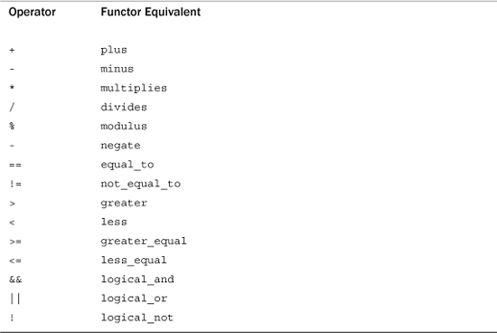
The predefined functors in Table 16.12 are all adaptable. Actually, the STL has five related concepts: adaptable generators, adaptable unary functions, adaptable binary functions, adaptable predicates, and adaptable binary predicates.
What makes a functor adaptable is that it carries typedef members identifying its argument types and return type. The members are called result_type, first_argument_type, and second_argument_type, and they represent what they sound like. For example, the return type of a plus<int> object is identified as plus<int>::result_type, and this would be a typedef for int.
The significance of a functor being adaptable is that it can then be used by function adapter objects, which assume the existence of these typedef members. For example, a function with an argument that is an adaptable functor can use the result_type member to declare a variable that matches the function’s return type.
Indeed, the STL provides function adapter classes that use these facilities. For example, suppose you want to multiply each element of the vector gr8 by 2.5. That calls for using the transform() version with a unary function argument, like the example shown earlier:
transform(gr8.begin(), gr8.end(), out, sqrt);
The multiplies() functor can do the multiplication, but it’s a binary function. So you need a function adapter that converts a functor that has two arguments to one that has one argument. The earlier TooBig2 example shows one way, but the STL has automated the process with the binder1st and binder2nd classes, which convert adaptable binary functions to adaptable unary functions.
Let’s look at binder1st. Suppose you have an adaptable binary function object f2(). You can create a binder1st object that binds a particular value, called val, to be used as the first argument to f2():
binder1st(f2, val) f1;
Then, invoking f1(x) with its single argument returns the same value as invoking f2() with val as its first argument and f1()’s argument as its second argument. That is, f1(x) is equivalent to f2(val, x), except that it is a unary function instead of a binary function. The f2() function has been adapted. Again, this is possible only if f2() is an adaptable function.
This might seem a bit awkward. However, the STL provides the bind1st() function to simplify using the binder1st class. You give it the function name and value used to construct a binder1st object, and it returns an object of that type. For example, you can convert the binary function multiplies() to a unary function that multiplies its argument by 2.5. Just do this:
bind1st(multiplies<double>(), 2.5)
Thus, the solution to multiplying every element in gr8 by 2.5 and displaying the results is this:
transform(gr8.begin(), gr8.end(), out,
bind1st(multiplies<double>(), 2.5));
The binder2nd class is similar, except that it assigns the constant to the second argument instead of to the first. It has a helper function called bind2nd that works analogously to bind1st.
Listing 16.16 incorporates some of the recent examples into a short program.
// funadap.cpp -- using function adapters
#include <iostream>
#include <vector>
#include <iterator>
#include <algorithm>
#include <functional>
void Show(double);
const int LIM = 6;
int main()
{
using namespace std;
double arr1[LIM] = {28, 29, 30, 35, 38, 59};
double arr2[LIM] = {63, 65, 69, 75, 80, 99};
vector<double> gr8(arr1, arr1 + LIM);
vector<double> m8(arr2, arr2 + LIM);
cout.setf(ios_base::fixed);
cout.precision(1);
cout << "gr8:\t";
for_each(gr8.begin(), gr8.end(), Show);
cout << endl;
cout << "m8: \t";
for_each(m8.begin(), m8.end(), Show);
cout << endl;
vector<double> sum(LIM);
transform(gr8.begin(), gr8.end(), m8.begin(), sum.begin(),
plus<double>());
cout << "sum:\t";
for_each(sum.begin(), sum.end(), Show);
cout << endl;
vector<double> prod(LIM);
transform(gr8.begin(), gr8.end(), prod.begin(),
bind1st(multiplies<double>(), 2.5));
cout << "prod:\t";
for_each(prod.begin(), prod.end(), Show);
cout << endl;
return 0;
}
void Show(double v)
{
std::cout.width(6);
std::cout << v << ' ';
}
Here is the output of the program in Listing 16.16:
gr8: 28.0 29.0 30.0 35.0 38.0 59.0
m8: 63.0 65.0 69.0 75.0 80.0 99.0
sum: 91.0 94.0 99.0 110.0 118.0 158.0
prod: 70.0 72.5 75.0 87.5 95.0 147.5
C++11 provides an alternative to function pointers and functors. It’s called a lambda expression, another topic discussed in Chapter 18.
The STL contains many nonmember functions for working with containers. You’ve seen a few of them already: sort(), copy(), find(), for_each(), random_shuffle(), set_union(), set_intersection(), set_difference(), and transform(). You’ve probably noticed that they feature the same overall design, using iterators to identify data ranges to be processed and to identify where results are to go. Some also take a function object argument to be used as part of the data processing.
There are two main generic components to the algorithm function designs. First, they use templates to provide generic types. Second, they use iterators to provide a generic representation for accessing data in a container. Thus, the copy() function can work with a container that holds type double values in an array, with a container that holds string values in a linked list, or with a container that stores user-defined objects in a tree structure, such as is used by set. Because pointers are a special case of iterators, STL functions such as copy() can be used with ordinary arrays.
The uniform container design allows meaningful relationships between containers of different kinds. For example, you can use copy() to copy values from an ordinary array to a vector object, from a vector object to a list object, and from a list object to a set object. You can use == to compare different kinds of containers—for example, deque and vector. This is possible because the overloaded == operator for containers uses iterators to compare contents, so a deque object and a vector object test as equal if they have the same content in the same order.
The STL divides the algorithm library into four groups:
• Nonmodifying sequence operations
• Mutating sequence operations
• Sorting and related operations
• Generalized numeric operations
The first three groups are described in the algorithm (formerly algo.h) header file, and the fourth group, being specifically oriented toward numeric data, gets its own header file, called numeric. (Formerly, they, too, were in algo.h.)
Nonmodifying sequence operations operate on each element in a range. These operations leave a container unchanged. For example, find() and for_each() belong to this category.
Mutating sequence operations also operate on each element in a range. As the name suggests, however, they can mutate, or change, the contents of a container. The change could be in values or in the order in which the values are stored. The transform(), random_shuffle(), and copy() functions fall into this category.
Sorting and related operations include several sorting functions (including sort()) and a variety of other functions, including the set operations.
The numeric operations include functions to sum the contents of a range, calculate the inner product of two containers, calculate partial sums, and calculate adjacent differences. Typically, these are operations that are characteristic of arrays, so vector is the container most likely to be used with them.
Appendix G provides a complete summary of these functions.
As you’ve seen again and again in this chapter, STL functions work with iterators and iterator ranges. The function prototype indicates the assumptions made about the iterators. For example, the copy() function has this prototype:
template<class InputIterator, class OutputIterator>
OutputIterator copy(InputIterator first, InputIterator last,
OutputIterator result);
Because the identifiers InputIterator and OutputIterator are template parameters, they just as easily could have been T and U. However, the STL documentation uses the template parameter names to indicate the concept that the parameter models. So this declaration tells you that the range parameters must be input iterators or better and that the iterator indicating where the result goes must be an output parameter or better.
One way of classifying algorithms is on the basis of where the result of the algorithm is placed. Some algorithms do their work in place, and others create copies. For example, when the sort() function is finished, the result occupies the same location that the original data did. So sort() is an in-place algorithm. The copy() function, however, sends the result of its work to another location, so it is a copying algorithm. The transform() function can do both. Like copy(), it uses an output iterator to indicate where the results go. Unlike copy(), transform() allows the output iterator to point to a location in the input range, so it can copy the transformed values over the original values.
Some algorithms come in two versions: an in-place version and a copying version. The STL convention is to append _copy to the name of the copying version. The latter version takes an additional output iterator parameter to specify the location to which to copy the outcome. For example, there is a replace() function that has this prototype:
template<class ForwardIterator, class T>
void replace(ForwardIterator first, ForwardIterator last,
const T& old_value, const T& new_value);
It replaces each instance of old_value with new_value. This occurs in place. Because this algorithm both reads from and writes to container elements, the iterator type has to be ForwardIterator or better. The copying version has this prototype:
template<class InputIterator, class OutputIterator, class T>
OutputIterator replace_copy(InputIterator first, InputIterator last,
OutputIterator result,
const T& old_value, const T& new_value);
This time the resulting data is copied to a new location, given by result, so the read-only input iterator is sufficient for specifying the range.
Note that replace_copy() has an OutputIterator return type. The convention for copying algorithms is that they return an iterator pointing to the location one past the last value copied.
Another common variation is that some functions have a version that performs an action conditionally, depending on the result of applying a function to a container element. These versions typically append _if to the function name. For example, replace_if() replaces an old value with a new value if applying a function to the old value returns the value true. Here’s the prototype:
template<class ForwardIterator, class Predicate class T>
void replace_if(ForwardIterator first, ForwardIterator last,
Predicate pred, const T& new_value);
(Recall that a predicate is a unary function that returns a bool value.) There’s also a version called replace_copy_if(). You can probably figure out what it does and what its prototype is like.
As with InputIterator, Predicate is a template parameter name and could just as easily be called T or U. However, the STL chooses to use Predicate to remind the user that the actual argument should be a model of the Predicate concept. Similarly, the STL uses terms such as Generator and BinaryPredicate to identify arguments that should model other function object concepts. Keep in mind that although the documentation can remind you what the iterator or functor requirements are, these names are not something the compiler can check. If you use the wrong sort of iterator, you can expect to see a long list of error messages as the compiler tries to instantiate the template.
string ClassThe string class, although not part of the STL, is designed with the STL in mind. For example, it has begin(), end(), rbegin(), and rend() members. Thus, it can use the STL interface. Listing 16.17 uses the STL to show all the permutations you can form from the letters in a word. A permutation is a rearrangement of the order of the elements in a container. The next_permutation() algorithm transforms the contents of a range to the next permutation; in the case of a string, the permutations are arranged in ascending alphabetical order. The algorithm returns true if it succeeds and false if the range already is in the final sequence. To get all the permutations of a range, you should start with the elements in the earliest possible order, and the program uses the STL sort() algorithm for that purpose.
// strgstl.cpp -- applying the STL to a string
#include <iostream>
#include <string>
#include <algorithm>
int main()
{
using namespace std;
string letters;
cout << "Enter the letter grouping (quit to quit): ";
while (cin >> letters && letters != "quit")
{
cout << "Permutations of " << letters << endl;
sort(letters.begin(), letters.end());
cout << letters << endl;
while (next_permutation(letters.begin(), letters.end()))
cout << letters << endl;
cout << "Enter next sequence (quit to quit): ";
}
cout << "Done.\n";
return 0;
}
Here’s a sample run of the program in Listing 16.17:
Enter the letter grouping (quit to quit): awl
Permutations of awl
alw
awl
law
lwa
wal
wla
Enter next sequence (quit to quit): all
Permutations of all
all
lal
lla
Enter next sequence (quit to quit): quit
Done.
Note that the next_permutation() algorithm automatically provides only unique permutations, which is why the output shows more permutations for the word awl than for the word all, which has duplicate letters.
Sometimes you have a choice between using an STL method and an STL function. Usually, the method is the better choice. First, it should be better optimized for a particular container. Second, being a member function, it can use a template class’s memory management facilities and resize a container when needed.
Suppose, for example, that you have a list of numbers and you want to remove all instances of a certain value, say 4, from the list. If la is a list<int> object, you can use the list remove() method:
la.remove(4); // remove all 4s from the list
After this method call, all elements with the value 4 are removed from the list, and the list is automatically resized.
There is also an STL algorithm called remove() (see Appendix G). Instead of being invoked by an object, it takes range arguments. So if lb is a list<int> object, a call to the function could look like this:
remove(lb.begin(), lb.end(), 4);
However, because this remove() is not a member, it can’t adjust the size of the list. Instead, it makes sure all the nonremoved items are at the beginning of the list, and it returns an iterator to the new past-the-end value. You can then use this iterator to fix the list size. For example, you can use the list erase() method to remove a range that describes the part of the list that is no longer needed. Listing 16.18 shows how this process works.
// listrmv.cpp -- applying the STL to a string
#include <iostream>
#include <list>
#include <algorithm>
void Show(int);
const int LIM = 10;
int main()
{
using namespace std;
int ar[LIM] = {4, 5, 4, 2, 2, 3, 4, 8, 1, 4};
list<int> la(ar, ar + LIM);
list<int> lb(la);
cout << "Original list contents:\n\t";
for_each(la.begin(), la.end(), Show);
cout << endl;
la.remove(4);
cout << "After using the remove() method:\n";
cout << "la:\t";
for_each(la.begin(), la.end(), Show);
cout << endl;
list<int>::iterator last;
last = remove(lb.begin(), lb.end(), 4);
cout << "After using the remove() function:\n";
cout << "lb:\t";
for_each(lb.begin(), lb.end(), Show);
cout << endl;
lb.erase(last, lb.end());
cout << "After using the erase() method:\n";
cout << "lb:\t";
for_each(lb.begin(), lb.end(), Show);
cout << endl;
return 0;
}
void Show(int v)
{
std::cout << v << ' ';
}
Here’s the output of the program in Listing 16.18:
Original list contents:
4 5 4 2 2 3 4 8 1 4
After using the remove() method:
la: 5 2 2 3 8 1
After using the remove() function:
lb: 5 2 2 3 8 1 4 8 1 4
After using the erase() method:
lb: 5 2 2 3 8 1
As you can see, the remove() method reduces the list la from 10 elements to 6 elements. However, list lb still contains 10 elements after the remove() function is applied to it. The last 4 elements are disposable because each is either the value 4 or a duplicate of a value moved farther to the front of the list.
Although the methods are usually better suited, the nonmethod functions are more general. As you’ve seen, you can use them on arrays and string objects as well as STL containers, and you can use them with mixed container types—for example, to save data from a vector container to a list or a set.
The STL is a library whose parts are designed to work together. The STL components are tools, but they are also building blocks to create other tools. Let’s illustrate this with an example. Suppose you want to write a program that lets the user enter words. At the end, you’d like a record of the words as they were entered, an alphabetical list of the words used (capitalization differences ignored), and a record of how many times each word was entered. To keep things simple, let’s assume that the input contains no numbers or punctuation.
Entering and saving the list of words is simple enough. Following the example of Listings 16.8 and 16.9, you can create a vector<string> object and use push_back() to add input words to the vector:
vector<string> words;
string input;
while (cin >> input && input != "quit")
words.push_back(input);
What about getting the alphabetic word list? You can use sort() followed by unique(), but that approach overwrites the original data because sort() is an in-place algorithm. There is an easier way that avoids this problem. You can create a set<string> object and copy (using an insert iterator) the words from the vector to the set. A set automatically sorts its contents, which means you don’t have to call sort(), and a set allows only one copy of a key, so that takes the place of calling unique(). Wait! The specification called for ignoring the case differences. One way to handle that is to use transform() instead of copy() to copy data from the vector to the set. For the transformation function, you can use one that converts a string to lowercase:
set<string> wordset;
transform(words.begin(), words.end(),
insert_iterator<set<string> > (wordset, wordset.begin()), ToLower);
The ToLower() function is easy to write. You just use transform() to apply the tolower() function to each element in the string, using the string both as source and destination. Remember, string objects, too, can use the STL functions. Passing and returning the string as a reference means the algorithm works on the original string without having to make copies. Here’s the code for ToLower():
string & ToLower(string & st)
{
transform(st.begin(), st.end(), st.begin(), tolower);
return st;
}
One possible problem is that the tolower() function is defined as int tolower(int), and some compilers want the function to match the element type, which is char. One solution is to replace tolower with toLower and to provide the following definition:
char toLower(char ch) { return tolower(ch); }
To get the number of times each word appears in the input, you can use the count() function. It takes a range and a value as arguments, and it returns the number of times the value appears in the range. You can use the vector object to provide the range and the set object to provide the list of words to count. That is, for each word in the set, you can count how many times it appears in the vector. To keep the resulting count associated with the correct word, you can store the word and the count as a pair<const string, int> object in a map object. The word will be the key (just one copy), and the count will be the value. This can be done in a single loop:
map<string, int> wordmap;
set<string>::iterator si;
for (si = wordset.begin(); si != wordset.end(); si++)
wordmap.insert(pair<string, int>(*si, count(words.begin(),
words.end(), *si)));
The map class has an interesting feature: You can use array notation with keys that serve as indexes to access the stored values. For example, wordmap["the"] would represent the value associated with the key "the", which in this case is the number of occurrences of the string "the". Because the wordset container holds all the keys used by wordmap, you can use the following code as an alternative and more attractive way of storing results:
for (si = wordset.begin(); si != wordset.end(); si++)
wordmap[*si] = count(words.begin(), words.end(), *si);
Because si points to a string in the wordset container, *si is a string and can serve as a key for wordmap. This code places both keys and values into the wordmap map.
Similarly, you can use the array notation to report results:
for (si = wordset.begin(); si != wordset.end(); si++)
cout << *si << ": " << wordmap[*si] << endl;
If a key is invalid, the corresponding value is 0.
Listing 16.19 puts these ideas together and includes code to display the contents of the three containers (a vector with the input, a set with a word list, and a map with a word count).
//usealgo.cpp -- using several STL elements
#include <iostream>
#include <string>
#include <vector>
#include <set>
#include <map>
#include <iterator>
#include <algorithm>
#include <cctype>
using namespace std;
char toLower(char ch) { return tolower(ch); }
string & ToLower(string & st);
void display(const string & s);
int main()
{
vector<string> words;
cout << "Enter words (enter quit to quit):\n";
string input;
while (cin >> input && input != "quit")
words.push_back(input);
cout << "You entered the following words:\n";
for_each(words.begin(), words.end(), display);
cout << endl;
// place words in set, converting to lowercase
set<string> wordset;
transform(words.begin(), words.end(),
insert_iterator<set<string> > (wordset, wordset.begin()),
ToLower);
cout << "\nAlphabetic list of words:\n";
for_each(wordset.begin(), wordset.end(), display);
cout << endl;
// place word and frequency in map
map<string, int> wordmap;
set<string>::iterator si;
for (si = wordset.begin(); si != wordset.end(); si++)
wordmap[*si] = count(words.begin(), words.end(), *si);
// display map contents
cout << "\nWord frequency:\n";
for (si = wordset.begin(); si != wordset.end(); si++)
cout << *si << ": " << wordmap[*si] << endl;
return 0;
}
string & ToLower(string & st)
{
transform(st.begin(), st.end(), st.begin(), toLower);
return st;
}
void display(const string & s)
{
cout << s << " ";
}
Here is a sample run of the program in Listing 16.19:
Enter words (enter quit to quit):
The dog saw the cat and thought the cat fat
The cat thought the cat perfect
quit
You entered the following words:
The dog saw the cat and thought the cat fat The cat thought the cat perfect
Alphabetic list of words:
and cat dog fat perfect saw the thought
Word frequency:
and: 1
cat: 4
dog: 1
fat: 1
perfect: 1
saw: 1
the: 5
thought: 2
The moral here is that your attitude when using the STL should be to avoid writing as much code as possible. STL’s generic and flexible design should save you lots of work. Also the STL designers are algorithm people who are very much concerned with efficiency. So the algorithms are well chosen and inline.
C++ provides some other class libraries that are more specialized than the examples covered so far in this chapter. For instance, the complex header file provides a complex class template for complex numbers, with specializations for float, long, and long double. The class provides standard complex number operations, along with standard functions that can be used with complex numbers. The C++11 random header file extends random number functionality.
Chapter 14 introduced another example, the valarray template class, supported by the valarray header file. This class template is designed to represent numeric arrays and provides support for a variety of numeric array operations, such as adding the contents of one array to another, applying math functions to each element of an array and applying linear algebra operations to arrays.
vector, valarray, and arrayPerhaps you are wondering why C++ has three array templates: vector, valarray, and array. These classes were developed by different groups for different purposes. The vector template class is part of a system of container classes and algorithms. The vector class supports container-oriented activities, such as sorting, insertion, rearrangement, searching, transferring data to other containers, and other manipulations. The valarray class template, on the other hand, is oriented toward numeric computation, and it is not part of the STL. It doesn’t have push_back() and insert() methods, for example, but it does provide a simple, intuitive interface for many mathematical operations. Finally, array is designed as a substitute for the built-in array type, combining the compactness and efficiency of that type with a better, safer interface. Being of fixed size, array doesn’t support push_back() and insert(), but it does offer several other STL methods. These include begin(), end(), rbegin(), and rend(), making it easy to apply STL algorithms to array objects.
Suppose, for example, that you have these declarations:
vector<double> ved1(10), ved2(10), ved3(10);
array<double, 10> vod1, vod2, vod3;
valarray<double> vad1(10), vad2(10), vad3(10);
Furthermore, assume that ved1, ved2, vod1, vod2, vad1, and vad2 all acquire suitable values. Suppose you want to assign the sum of the first elements of two arrays to the first element of a third array, and so on. With the vector class, you would do this:
transform(ved1.begin(), ved1.end(), ved2.begin(), ved3.begin(),
plus<double>());
You can do the same with the array class:
transform(vod1.begin(), vod1.end(), vod2.begin(), vod3.begin(),
plus<double>());
However, the valarray class overloads all the arithmetic operators to work with valarray objects, so you would use this:
vad3 = vad1 + vad2; // + overloaded
Similarly, the following would result in each element of vad3 being the product of the corresponding elements in vad1 and vad2:
vad3 = vad1 * vad2; // * overloaded
Suppose you want to replace every value in an array with that value multiplied by 2.5. The STL approach is this:
transform(ved3.begin(), ved3.end(), ved3.begin(),
bind1st(multiplies<double>(), 2.5));
The valarray class overloads multiplying a valarray object by a single value, and it also overloads the various computed assignment operators, so you could use either of the following:
vad3 = 2.5 * vad3; // * overloaded
vad3 *= 2.5; // *= overloaded
Suppose you want to take the natural logarithm of every element of one array and store the result in the corresponding element of a second array. The STL approach is this:
transform(ved1.begin(), ved1.end(), ved3.begin(),
log);
The valarray class overloads the usual math functions to take a valarray argument and to return a valarray object, so you can use this:
vad3 = log(vad1); // log() overloaded
Or you could use the apply() method, which also works for non-overloaded functions:
vad3 = vad1.apply(log);
The apply() method doesn’t alter the invoking object; instead, it returns a new object that contains the resulting values.
The simplicity of the valarray interface is even more apparent when you do a multistep calculation:
vad3 = 10.0* ((vad1 + vad2) / 2.0 + vad1 * cos(vad2));
The vector-STL version is left as an exercise for the motivated reader.
The valarray class also provides a sum() method that sums the contents of a valarray object, a size() method that returns the number of elements, a max() method that returns the largest value in an object, and a min() method that returns the smallest value.
As you can see, valarray has a clear notational advantage over vector for mathematical operations, but it is also much less versatile. The valarray class does have a resize() method, but there’s no automatic resizing of the sort you get when you use the vector push_back() method. There are no methods for inserting values, searching, sorting, and the like. In short, the valarray class is more limited than the vector class, but its narrower focus allows a much simpler interface.
Does the simpler interface that valarray provides translate to better performance? In most cases, no. The simple notation is typically implemented with the same sort of loops you would use with ordinary arrays. However, some hardware designs allow vector operations in which the values in an array are loaded simultaneous into an array of registers and then processed simultaneously. In principle, valarray operations could be implemented to take advantage of such designs.
Can you use the STL with valarray objects? Answering this question provides a quick review of some STL principles. Suppose you have a valarray<double> object that has 10 elements:
valarray<double> vad(10);
After the array has been filled with numbers, can you, say, use the STL sort function on it? The valarray class doesn’t have begin() and end() methods, so you can’t use them as the range arguments:
sort(vad.begin(), vad.end()); // NO, no begin(), end()
Also vad is an object, not a pointer, so you can’t imitate ordinary array usage and provide vad and vad + 10, as the following code attempts to do:
sort(vad, vad + 10); // NO, vad an object, not an address
You can use the address operator:
sort(&vad[0], &vad[10]); // maybe?
But the behavior of using a subscript one past the end is undefined for valarray. This doesn’t necessarily mean using &vad[10] won’t work.(In fact, it did work for all six compilers used to test this code.) But it does mean that it might not work. For the code to fail, you probably would need a very unlikely circumstance, such as the array being butted against the end of the block of memory set aside for the heap. But, if a $385-million mission depended on your code, you might not want to risk that failure.
C++11 remedies the situation by providing begin() and end() template functions that take a valarray object as an argument. So you would use begin(vad) instead of vad.begin(). These functions return values that are compatible with STL range requirements:
sort(begin(vad), end(vad)); // C++11 fix!
Listing 16.20 illustrates some of the relative strengths of the vector and valarray classes. It uses push_back() and the automatic sizing feature of vector to collect data. Then after sorting the numbers, the program copies them from the vector object to a valarray object of the same size and does a few math operations.
// valvect.cpp -- comparing vector and valarray
#include <iostream>
#include <valarray>
#include <vector>
#include <algorithm>
int main()
{
using namespace std;
vector<double> data;
double temp;
cout << "Enter numbers (<=0 to quit):\n";
while (cin >> temp && temp > 0)
data.push_back(temp);
sort(data.begin(), data.end());
int size = data.size();
valarray<double> numbers(size);
int i;
for (i = 0; i < size; i++)
numbers[i] = data[i];
valarray<double> sq_rts(size);
sq_rts = sqrt(numbers);
valarray<double> results(size);
results = numbers + 2.0 * sq_rts;
cout.setf(ios_base::fixed);
cout.precision(4);
for (i = 0; i < size; i++)
{
cout.width(8);
cout << numbers[i] << ": ";
cout.width(8);
cout << results[i] << endl;
}
cout << "done\n";
return 0;
}
Here is a sample run of the program in Listing 16.20:
Enter numbers (<=0 to quit):
3.3 1.8 5.2 10 14.4 21.6 26.9 0
1.8000: 4.4833
3.3000: 6.9332
5.2000: 9.7607
10.0000: 16.3246
14.4000: 21.9895
21.6000: 30.8952
26.9000: 37.2730
done
The valarray class has many features besides the ones discussed so far. For example, if numbers is a valarray<double> object, the following statement creates an array of bool values, with vbool[i] set to the value of numbers[i] > 9—that is, to true or false:
valarray<bool> vbool = numbers > 9;
There are extended versions of subscripting. Let’s look at one—the slice class. A slice class object can be used as an array index, in which case it represents, in general, not just one value but a subset of values. A slice object is initialized to three integer values: the start, the number, and the stride. The start indicates the index of the first element to be selected, the number indicates the number of elements to be selected, and the stride represents the spacing between elements. For example, the object constructed by slice(1,4,3) means select the four elements whose indexes are 1, 4, 7, and 10. That is, start with the start element, add the stride to get the next element, and so on until four elements are selected. If, say, varint is a vararray<int> object, then the following statement would set elements 1, 4, 7, and 10 to the value 10:
varint[slice(1,4,3)] = 10; // set selected elements to 10
This special subscripting facility allows you to use a one-dimensional valarray object to represent two-dimensional data. For example, suppose you want to represent an array with 4 rows and 3 columns. You can store the information in a 12-element valarray object. Then a slice(0,3,1) object used as a subscript would represent elements 0, 1, and 2—that is, the first row. Similarly, a slice(0,4,3) subscript would represent elements 0, 3, 6, and 9—that is, the first column. Listing 16.21 illustrates some features of slice.
// vslice.cpp -- using valarray slices
#include <iostream>
#include <valarray>
#include <cstdlib>
const int SIZE = 12;
typedef std::valarray<int> vint; // simplify declarations
void show(const vint & v, int cols);
int main()
{
using std::slice; // from <valarray>
using std::cout;
vint valint(SIZE); // think of as 4 rows of 3
int i;
for (i = 0; i < SIZE; ++i)
valint[i] = std::rand() % 10;
cout << "Original array:\n";
show(valint, 3); // show in 3 columns
vint vcol(valint[slice(1,4,3)]); // extract 2nd column
cout << "Second column:\n";
show(vcol, 1); // show in 1 column
vint vrow(valint[slice(3,3,1)]); // extract 2nd row
cout << "Second row:\n";
show(vrow, 3);
valint[slice(2,4,3)] = 10; // assign to 2nd column
cout << "Set last column to 10:\n";
show(valint, 3);
cout << "Set first column to sum of next two:\n";
// + not defined for slices, so convert to valarray<int>
valint[slice(0,4,3)] = vint(valint[slice(1,4,3)])
+ vint(valint[slice(2,4,3)]);
show(valint, 3);
return 0;
}
void show(const vint & v, int cols)
{
using std::cout;
using std::endl;
int lim = v.size();
for (int i = 0; i < lim; ++i)
{
cout.width(3);
cout << v[i];
if (i % cols == cols - 1)
cout << endl;
else
cout << ' ';
}
if (lim % cols != 0)
cout << endl;
}
The + operator is defined for valarray objects, such as valint, and it’s defined for a single int element, such as valint[1]. But as the code in Listing 16.21 notes, the + operator isn’t defined for slice-subscripted valarray units, such as valint[slice(1,4,3)]. Therefore, the program constructs full objects from the slices to enable addition:
vint(valint[slice(1,4,3)]) // calls a slice-based constructor
The valarray class provides constructors just for this purpose.
Here is a sample run of the program in Listing 16.21:
Original array:
0 3 3
2 9 0
8 2 6
6 9 1
Second column:
3
9
2
9
Second row:
2 9 0
Set last column to 10:
0 3 10
2 9 10
8 2 10
6 9 10
Set first column to sum of next two:
13 3 10
19 9 10
12 2 10
19 9 10
Because values are set using rand(), different implementations of rand() will result in different values.
There’s more, including the gslice class to represent multidimensional slices, but this should be enough to give you a sense of what valarray is about.
initializer_list Template (C++11)The initializer_list template is another C++11 addition to the C++ library. You can use the initializer-list syntax to initialize an STL container to a list of values:
std::vector<double> payments {45.99, 39.23, 19.95, 89.01};
This would create a container for four elements and initialize the elements to the four values in the list. What makes this possible is that the container classes now have constructors taking an initializer_list<T> argument. A vector<double> object, for example, has a constructor that accepts an initializer_list<double> argument, and the previous declaration is the same as this:
std::vector<double> payments({45.99, 39.23, 19.95, 89.01});
Here, the list is written explicitly as a constructor argument.
Normally, as part of the C++11 universal initialization syntax, you can invoke a class constructor using {} instead of () notation:
shared_ptr<double> pd {new double}; // ok to use {} instead of ()
But this would create problems if there also is an initializer_list constructor:
std::vector<int> vi{10}; // ??
Which constructor does this invoke?
std::vector<int> vi(10); // case A: 10 uninitialized elements
std::vector<int> vi({10}); // case B: 1 element set to 10
The answer is that if the class does have a constructor accepting an initializer_list argument, then using the {} syntax invokes that particular constructor. So in this example, case B applies.
The initializer_list elements should all be of one type. However, the compiler will do conversions to match the type:
std::vector<double> payments {45.99, 39.23, 19, 89};
// same as std::vector<double> payments {45.99, 39.23, 19.0, 89.0};
Here, because the vector element type is double, the list is type initializer_list<double>, and 19 and 89 are converted to double.
The usual list restrictions on narrowing apply:
std::vector<int> values = {10, 8, 5.5}; // narrowing, compile-time error
Here, the element type is int, and the implied conversion of 5.5 to int is not allowed.
It doesn’t make sense to provide an initializer_list constructor unless the class is meant to handle lists of varying sizes. For instance, you don’t want an initializer_list constructor for a class taking a fixed number of values. For example, the following declaration does not provide an initializer_list constructor for the three data members:
class Position
{
private:
int x;
int y;
int z;
public:
Position(int xx = 0, int yy = 0, int zz = 0)
: x(xx), y(yy), z(zz) {}
// no initializer_list constructor
...
};
This allows you to use the {} syntax with the Position(int,int,int) constructor:
Position A = {20, -3}; // uses Position(20,-3,0)
initializer_listYou can use initializer_list objects in your code by including the initializer_list header file. The template class has begin() and end() members, and you can use them to access list elements. It also has a size() member that returns the number of elements. Listing 16.22 shows a simple example using initializer_list. It requires a compiler that supports this C++11 feature.
// ilist.cpp -- use initializer_list (C++11 feature)
#include <iostream>
#include <initializer_list>
double sum(std::initializer_list<double> il);
double average(const std::initializer_list<double> & ril);
int main()
{
using std::cout;
cout << "List 1: sum = " << sum({2,3,4})
<<", ave = " << average({2,3,4}) << '\n';
std::initializer_list<double> dl = {1.1, 2.2, 3.3, 4.4, 5.5};
cout << "List 2: sum = " << sum(dl)
<<", ave = " << average(dl) << '\n';
dl = {16.0, 25.0, 36.0, 40.0, 64.0};
cout << "List 3: sum = " << sum(dl)
<<", ave = " << average(dl) << '\n';
return 0;
}
double sum(std::initializer_list<double> il)
{
double tot = 0;
for (auto p = il.begin(); p !=il.end(); p++)
tot += *p;
return tot;
}
double average(const std::initializer_list<double> & ril)
{
double tot = 0;
int n = ril.size();
double ave = 0.0;
if (n > 0)
{
for (auto p = ril.begin(); p !=ril.end(); p++)
tot += *p;
ave = tot / n;
}
return ave;
}
List 1: sum = 9, ave = 3
List 2: sum = 16.5, ave = 3.3
List 3: sum = 181, ave = 36.2
You can pass an initializer_list object by value or by reference, as shown by sum() and average(). The object itself is small, typically two pointers (one to the beginning and one past end) or a pointer to the beginning and an integer representing the size, so the choice is not a major performance issue. (The STL passes them by value.)
The function argument can be a list literal, like {2,3,4}, or it can be a list variable, like dl.
The iterator types for initializer_list are const, so you can’t change the values in a list:
*dl.begin() = 2011.6; // not allowed
But, as Listing 16.22 shows, you can attach a list variable to a different list:
dl = {16.0, 25.0, 36.0, 40.0, 64.0}; // allowed
However, the intended use of the initializer_list class is to pass a list of values to a constructor or some other function.
C++ includes a powerful set of libraries that provide solutions to many common programming problems and the tools to simplify many more problems. The string class provides a convenient means to handle strings as objects as well as automatic memory management and a host of methods and functions for working with strings. For example, these methods and functions allow you to concatenate strings, insert one string into another, reverse a string, search a string for characters or substrings, and perform input and output operations.
Smart pointer templates such as auto_ptr and C++11’s shared_ptr and unique_ptr make it easier to manage memory allocated by new. If you use one of these smart pointers instead of a regular pointer to hold the address returned by new, you don’t have to remember to use the delete operator later. When the smart pointer object expires, its destructor calls the delete operator automatically.
The STL is a collection of container class templates, iterator class templates, function object templates, and algorithm function templates that feature a unified design based on generic programming principles. The algorithms use templates to make them generic in terms of type of stored object and an iterator interface to make them generic in terms of the type of container. Iterators are generalizations of pointers.
The STL uses the term concept to denote a set of requirements. For example, the concept of forward iterators includes the requirements that a forward iterator object can be dereferenced for reading and writing and that it can be incremented. Actual implementations of the concept are said to model the concept. For example, the forward iterator concept could be modeled by an ordinary pointer or by an object designed to navigate a linked list. Concepts based on other concepts are termed refinements. For example, the bidirectional iterator is a refinement of the forward iterator concept.
Container classes, such as vector and set, are models of container concepts, such as containers, sequences, and associative containers. The STL defines several container class templates: vector, deque, list, set, multiset, map, multimap, and bitset. It also defines the adapter class templates queue, priority_queue, and stack; these classes adapt an underlying container class to give it the characteristic interface suggested by the adapter class template name. Thus, stack, although based, by default, on vector, allows insertion and removal only at the top of the stack. C++11 adds forward_list, unordered_set, unordered_multiset, unordered_map, and unordered_multimap.
Some algorithms are expressed as container class methods, but the bulk are expressed as general, nonmember functions. This is made possible by using iterators as the interface between containers and algorithms. One advantage to this approach is that there needs to be just one for_each() or copy() function, and so on, instead of a separate version for each container. A second advantage is that STL algorithms can be used with non-STL containers, such as ordinary arrays, string objects, array objects, and any classes you design consistent with the STL iterator and container idiom.
Both containers and algorithms are characterized by the type of iterator they provide or need. You should check that a container features an iterator concept that supports the algorithm’s needs. For example, the for_each() algorithm uses an input iterator, whose minimal requirements are met by all the STL container class types. But sort() requires random access iterators, which not all container classes support. A container class may offer a specialized method as an option if it doesn’t meet the requirements for a particular algorithm. For example, the list class has a sort() method that is based on bidirectional iterators, so it can use that method instead of the general function.
The STL also provides function objects, or functors, that are classes for which the () operator is overloaded—that is, for which the operator()() method is defined. Objects of such classes can be invoked by using function notation but can carry additional information. Adaptable functors, for example, have typedef statements that identify the argument types and the return value type for the functor. This information can be used by other components, such as function adapters.
By representing common container types and providing a variety of common operations implemented with efficient algorithms, all done in a generic manner, the STL provides an excellent source of reusable code. You may be able to solve a programming problem directly with the STL tools, or you may be able to use them as building blocks to construct the solution you need.
The complex and valarray template classes support numeric operations for complex numbers and arrays.
1. Consider the following class declaration:
class RQ1
{
private:
char * st; // points to C-style string
public:
RQ1() { st = new char [1]; strcpy(st,""); }
RQ1(const char * s)
{st = new char [strlen(s) + 1]; strcpy(st, s); }
RQ1(const RQ1 & rq)
{st = new char [strlen(rq.st) + 1]; strcpy(st, rq.st); }
~RQ1() {delete [] st};
RQ & operator=(const RQ & rq);
// more stuff
};
Convert this to a declaration that uses a string object instead. What methods no longer need explicit definitions?
2. Name at least two advantages string objects have over C-style strings in terms of ease-of-use.
3. Write a function that takes a reference to a string object as an argument and that converts the string object to all uppercase.
4. Which of the following are not examples of correct usage (conceptually or syntactically) of auto_ptr? (Assume that the needed header files have been included.)
auto_ptr<int> pia(new int[20]);
auto_ptr<string> (new string);
int rigue = 7;
auto_ptr<int>pr(&rigue);
auto_ptr dbl (new double);
5. If you could make the mechanical equivalent of a stack that held golf clubs instead of numbers, why would it (conceptually) be a bad golf bag?
6. Why would a set container be a poor choice for storing a hole-by-hole record of your golf scores?
7. Because a pointer is an iterator, why didn’t the STL designers simply use pointers instead of iterators?
8. Why didn’t the STL designers simply define a base iterator class, use inheritance to derive classes for the other iterator types, and express the algorithms in terms of those iterator classes?
9. Give at least three examples of convenience advantages that a vector object has over an ordinary array.
10. If Listing 16.9 were implemented with list instead of vector, what parts of the program would become invalid? Could the invalid part be fixed easily? If so, how?
11. Consider the TooBig functor in Listing 16.15. What does the following code do, and what values get assigned to bo?
bool bo = TooBig<int>(10)(15);
1. A palindrome is a string that is the same backward as it is forward. For example, “tot” and “otto” are rather short palindromes. Write a program that lets a user enter a string and that passes to a bool function a reference to the string. The function should return true if the string is a palindrome and false otherwise. At this point, don’t worry about complications such as capitalization, spaces, and punctuation. That is, this simple version should reject “Otto” and “Madam, I’m Adam.” Feel free to scan the list of string methods in Appendix F for methods to simplify the task.
2. Do the same problem as given in Programming Exercise 1 but do worry about complications such as capitalization, spaces, and punctuation. That is, “Madam, I’m Adam” should test as a palindrome. For example, the testing function could reduce the string to “madamimadam” and then test whether the reverse is the same. Don’t forget the useful cctype library. You might find an STL function or two useful although not necessary.
3. Redo Listing 16.3 so that it gets it words from a file. One approach is to use a vector<string> object instead of an array of string. Then you can use push_back() to copy how ever many words are in your data file into the vector<string> object and use the size() member to determine the length of the word list. Because the program should read one word at a time from the file, you should use the >> operator rather than getline(). The file itself should contain words separated by spaces, tabs, or new lines.
4. Write a function with an old-style interface that has this prototype:
int reduce(long ar[], int n);
The actual arguments should be the name of an array and the number of elements in the array. The function should sort an array, remove duplicate values, and return a value equal to the number of elements in the reduced array. Write the function using STL functions. (If you decide to use the general unique() function, note that it returns the end of the resulting range.) Test the function in a short program.
5. Do the same problem as described in Programming Exercise 4, except make it a template function:
template <class T>
int reduce(T ar[], int n);
Test the function in a short program, using both a long instantiation and a string instantiation.
6. Redo the example shown in Listing 12.12, using the STL queue template class instead of the Queue class described in Chapter 12.
7. A common game is the lottery card. The card has numbered spots of which a certain number are selected at random. Write a Lotto() function that takes two arguments. The first should be the number of spots on a lottery card, and the second should be the number of spots selected at random. The function should return a vector<int> object that contains, in sorted order, the numbers selected at random. For example, you could use the function as follows:
vector<int> winners;
winners = Lotto(51,6);
This would assign to winners a vector that contains six numbers selected randomly from the range 1 through 51. Note that simply using rand() doesn’t quite do the job because it may produce duplicate values. Suggestion: Have the function create a vector that contains all the possible values, use random_shuffle(), and then use the beginning of the shuffled vector to obtain the values. Also write a short program that lets you test the function.
8. Mat and Pat want to invite their friends to a party. They ask you to write a program that does the following:
• Allows Mat to enter a list of his friends’ names. The names are stored in a container and then displayed in sorted order.
• Allows Pat to enter a list of her friends’ names. The names are stored in a second container and then displayed in sorted order.
• Creates a third container that merges the two lists, eliminates duplicates, and displays the contents of this container.
9. Compared to an array, a linked list features easier addition and removal of elements but is slower to sort. This raises a possibility: Perhaps it might be faster to copy a list to an array, sort the array, and copy the sorted result back to the list than to simply use the list algorithm for sorting. (But it also could use more memory.) Test the speed hypothesis with the following approach:
a. Create a large vector<int> object vi0, using rand() to provide initial values.
b. Create a second vector<int> object vi and a list<int> object li of the same size as the original and initialize them to values in the original vector.
c. Time how long the program takes to sort vi using the STL sort() algorithm, then time how long it takes to sort li using the list sort() method.
d. Reset li to the unsorted contents of vi0. Time the combined operation of copying li to vi, sorting vi, and copying the result back to li.
To time these operations, you can use clock() from the ctime library. As in Listing 5.14, you can use this statement to start the first timing:
clock_t start = clock();
Then use the following at the end of the operation to get the elapsed time:
clock_t end = clock();
cout << (double)(end - start)/CLOCKS_PER_SEC;
This is by no means a definitive test because the results will depend on a variety of factors, including available memory, whether multiprocessing is going on, and the size of the array or list. (One would expect the relative efficiency advantage of the array over the list to increase with the number of elements being sorted.) Also if you have a choice between a default build and a release build, use the release build for the measurement. With today’s speedy computers, you probably will need to use as large an array as possible to get meaningful readings. You might try, for example, 100,000 elements, 1,000,000 elements, and 10,000,000 elements.
10. Modify Listing 16.9 (vect3.cpp) as follows:
a. Add a price member to the Review structure.
b. Instead of using a vector of Review objects to hold the input, use a vector of shared_ptr<Review> objects. Remember that a shared_ptr has to be initialized with a pointer returned by new.
c. Follow the input stage with a loop that allows the user the following options for displaying books: in original order, in alphabetical order, in order of increasing ratings, in order of decreasing ratings, in order of increasing price, in order of decreasing price, and quitting.
Here’s one possible approach. After getting the initial input, create another vector of shared_ptrs initialized to the original array. Define an operator<() function that compares pointed-to structures and use it to sort the second vector so that the shared_ptrs are in the order of the book names stored in the pointed-to objects. Repeat the process to get vectors of shared_ptrs sorted by rating and by price. Note that rbegin() and rend() save you the trouble of also creating vectors of reversed order.